← 回股市觀察
逐檔技術線型分析
2026/11/27 · 成交金額上市前 50 名 ＋ 上櫃前 20 名（共 70 檔）· 公開資料整理
39308.08
加權指數 +156.27 點（+0.40%）
438 / 551
上市個股上漲／下跌家數
上漲 40.3% · 下跌 50.7% · 持平 8.9%（共 1086 檔）
262 / 524
上櫃個股上漲／下跌家數
上漲 30.4% · 下跌 60.8% · 持平 8.8%（共 862 檔）
統計範圍：當日成交金額上市前 50 名 ＋ 上櫃前 20 名（共 70 檔，皆為 4 位數代號的個股，不含 ETF／權證）。
兩個市場各自取前 N 名後合併呈現，卡片上標示市場別（上市／上櫃），清單也附市場分布。
條件統計：上市 上升趨勢：底底高 ＋ 頭頭高 0 檔、突破頸線 0 檔、底底高 1 檔、頭頭高 6 檔、站上月線 11 檔、月線向上 4 檔、外資買超 19 檔、量價攻擊（收紅＋大量） 6 檔、跌破前低（線型轉弱） 2 檔；上櫃 上升趨勢：底底高 ＋ 頭頭高 1 檔、突破頸線 0 檔、底底高 1 檔、頭頭高 2 檔、站上月線 4 檔、月線向上 2 檔、外資買超 9 檔、量價攻擊（收紅＋大量） 0 檔、跌破前低（線型轉弱） 0 檔。
五項全滿足（底底高＋頭頭高＋站上月線＋月線向上＋5 日線向上）：上市 無；上櫃 天品。
資料日 2026/11/27。籌碼：上市為證交所三大法人、上櫃為櫃買中心三大法人；上櫃另附融資餘額。
每一檔都附上 K 線圖與線型說明：黃圈是轉折低點、粉圈是轉折高點、藍線是月線。
圖上兩條水平虛線、左側標數值：高點頸線（紅，連到最多「轉折高點」的那條水平線，代表上方壓力帶；收盤站上就算突破）與
低點頸線（綠，連到最多「轉折低點」的那條水平線，代表下方支撐帶；收盤跌破就算跌破）；
兩條線都只看最近 6 個轉折點、容忍同一價位帶 4%，連不到 2 個轉折點就不畫。
卡片的標籤可以點回上方對應清單，清單裡的股名也可以點到該檔。
本頁為公開資料（證交所每日收盤行情與三大法人、櫃買中心每日收盤行情與三大法人、Yahoo 股市日線）的整理與觀察，
不構成投資建議，不報牌、不預測、不下買賣決策。
大盤趨勢快篩（加權指數） 資料日 2026/11/27・來源：證交所公開資料
主狀態：跌破頸線（M 頭成立）
前一交易日對照（11/26）：跌破頸線（M 頭成立）（量比 20 0.87） → 今日跌破頸線（M 頭成立）（量比 20 0.72）
指標、數值、判定（點開看 12 項明細：均線位置／排列、月線方向、頸線、轉折結構、位階、量價…）
加權指數今天漲 156.27 點（+0.40%），收 39,308.08、跌破月線 40,861.38；月線還在下彎，MA20 這條短均還沒收復，離高點頸線 47,615.17 還差 17.45%。
- 均線位置：4 條均線站上 2 條；沒站上的是 MA20 40,861.38（收盤比它低 3.80%）、MA60 45,136.23（收盤比它低 12.91%）
- 月線方向：月線 MA20 現在 40,861.38，比 5 個交易日前低 1,858.19 點 → 下彎
- 量能：集中市場成交 6,946.6 億，比 5 日均量少很多（0.80 倍）、比 20 日均量少很多（0.72 倍）
- 關鍵價位：高點頸線 47,615.17，還差 17.45%；低點頸線 44,639.15已跌破
- 大小型股：加權 +0.40%、櫃買 -1.40%，方向相反（大型股與小型股不同調）
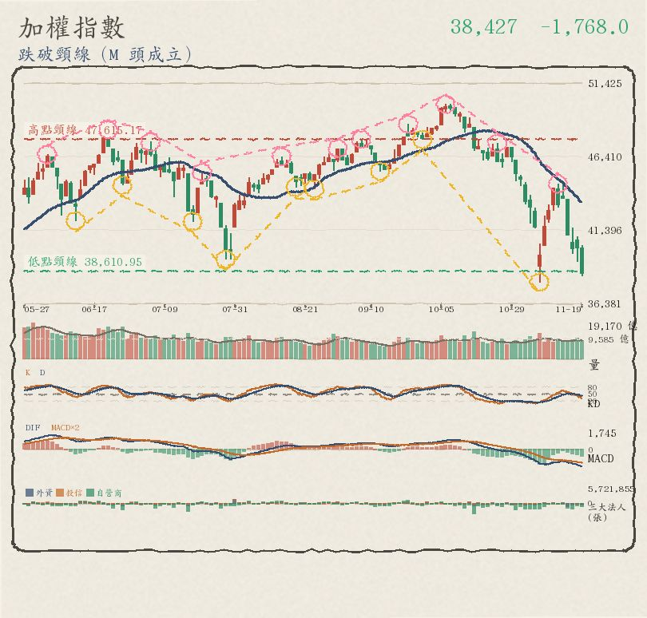
圖說：加權指數日 K（與個股圖相同標記）：黃圈＝轉折低點、粉圈＝轉折高點、虛線小圈＝還沒確認的轉折、藍線＝月線 MA20、水平虛線＝高點／低點頸線。最後一根是資料日當天。
本區塊為公開資料的技術面觀察，不構成投資建議，
不報牌、不預測、不下買賣決策。成交金額為集中市場總成交金額（含 ETF／權證），
與頁首摘要的「上市個股成交金額」口徑不同。標籤是統計，不是評分、也不是推薦。
上市 vs 上櫃（同期快篩）
加權 +0.40% vs 櫃買 -1.40%（方向相反，大小型股背離） → 方向相反（大小型股背離）
（兩個市場分開寫，不合併成一個數字；櫃買為 TPEX 公開資料）
櫃買歷史：TPEX 逐日回補 130 根；來源：櫃買中心 www/zh-tw/indexInfo/sectinx（逐日，官方；OpenAPI tpex_index 只回當月）
（TPEX OpenAPI 只回當月，故逐日回補；歷史不足就不算該條均線並標「資料不足」，不用錯數字）
近 20 個交易日大盤狀態回溯（最新在上）（點開看逐日主狀態／量比／量價象限）
用同一支程式回算最近 20 個交易日（主狀態 S1~S8 與量比 20 皆為當日收盤當時的判定，
不是事後調整）；量比 20 未公布的日子寫「—」。
好條件最多的（前 10）
不好條件最多的（前 10）
本期市場狀態：空頭（等權指數在 60 日均線之下）（空頭期間：趨勢類條件反向（回測後 20 日差距 −0.9% ~ −2.1%），本排行改用超跌反轉類（跌破前低／在月線之下／月線下彎））
好條件（4 項）：跌破前低、在月線之下、月線下彎、外資買超。
不好條件（5 項）：站上月線、月線向上、突破頸線、量價攻擊（收紅＋大量）、外資賣超。
兩邊都是同一組資料（日線結構＋當日收盤量價籌碼）算出來的「符合項目數」，只是方向相反；
條件數不是評分、也不是推薦，不構成投資建議。
上升趨勢：底底高 ＋ 頭頭高（1 上市 0／上櫃 1）
逐檔分析（70 檔）
區間或轉弱 成交金額 921.61 億・全榜第 1 名（上市第 1 名）
好條件 2/4：在月線之下、月線下彎
不好條件 1/5：外資賣超

今天收紅、但成交量比平均少、跌破月線 2213，離高點頸線 2395 還差 9.0%，轉折還沒走出明顯方向。
- 月線位置：收盤 2180 在月線 2213 之下；5 日線 2147 也在月線之下（短均在下）；月線走平或向下、5 日線向上
- 量能：成交量是 20 日均量的 0.86 倍，比 20 日均量少一些；收紅但量縮，量價背離
- 關鍵價位：高點頸線 2395 還沒突破，差 9.0%；最近轉折高點 2230（低於 2.2%）；最近轉折低點 1970（高於 10.7%）
- 轉折結構：低點 2020、1970、1970 與高點 2395、2395、2230 都沒有明顯遞增，屬於區間震盪或轉弱；還沒確認的轉折低點 11-25 2020；還沒確認的轉折高點 11-27 2180（圖上虛線小圈）
區間或轉弱 成交金額 330.79 億・全榜第 2 名（上市第 2 名）
好條件 2/4：在月線之下、月線下彎
不好條件 1/5：外資賣超
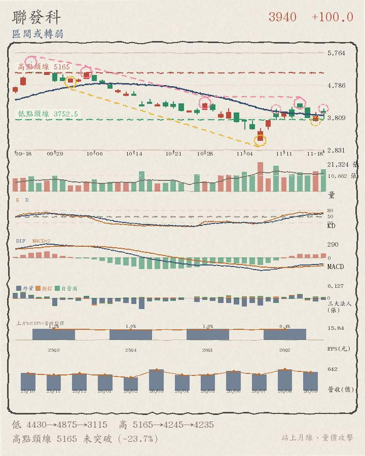
今天收黑、成交量也比平均少、跌破月線 3756.75，離高點頸線 4245 還差 13.3%，轉折還沒走出明顯方向。
- 月線位置：收盤 3680 在月線 3756.75 之下；5 日線 3753 也在月線之下（短均在下）；月線走平或向下、5 日線向上
- 量能：成交量是 20 日均量的 0.65 倍，比 20 日均量少很多
- 關鍵價位：高點頸線 4245 還沒突破，差 13.3%；最近轉折高點 4050（低於 9.1%）；最近轉折低點 3350（高於 9.9%）
- 轉折結構：低點 3115、3350、3350 與高點 4245、4235、4050 都沒有明顯遞增，屬於區間震盪或轉弱；還沒確認的轉折低點 11-25 3645、11-27 3595；還沒確認的轉折高點 11-18 4075（圖上虛線小圈）
區間或轉弱 成交金額 205.28 億・全榜第 4 名（上市第 3 名）
好條件 2/4：在月線之下、月線下彎
不好條件 2/5：量價攻擊（收紅＋大量）、外資賣超
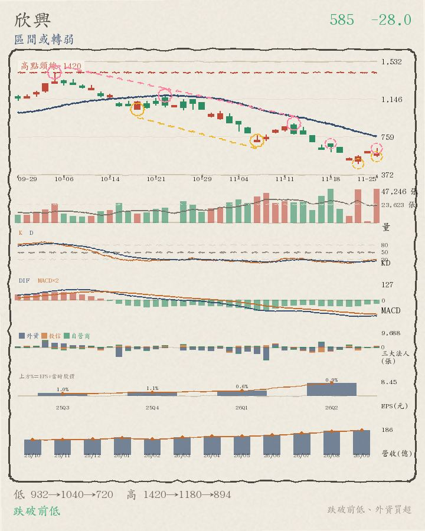
今天帶量收紅、跌破月線 726.2，離高點頸線 1420 還差 54.5%，轉折還沒走出明顯方向。
- 月線位置：收盤 646 在月線 726.2 之下；5 日線 609 也在月線之下（短均在下）；月線走平或向下、5 日線走平或向下
- 量能：成交量是 20 日均量的 1.09 倍，比 20 日均量大一些；收紅又量增，量價配合
- 關鍵價位：高點頸線 1420 還沒突破，差 54.5%；最近轉折高點 894（低於 27.7%）；最近轉折低點 484.5（高於 33.3%）
- 轉折結構：低點 1040、720、484.5 與高點 1420、1180、894 都沒有明顯遞增，屬於區間震盪或轉弱；還沒確認的轉折低點 11-25 555；還沒確認的轉折高點 11-18 691、11-27 661（圖上虛線小圈）
區間或轉弱 成交金額 167.72 億・全榜第 5 名（上市第 4 名）
好條件 2/4：在月線之下、月線下彎
不好條件 1/5：外資賣超
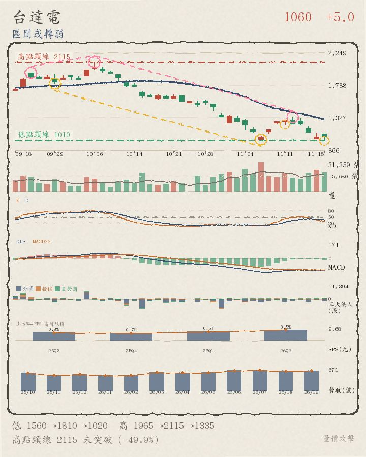
今天收紅、但成交量比平均少、跌破月線 1137.5，離高點頸線 2115 還差 46.8%，轉折還沒走出明顯方向。
- 月線位置：收盤 1125 在月線 1137.5 之下；5 日線 1075 也在月線之下（短均在下）；月線走平或向下、5 日線向上
- 量能：成交量是 20 日均量的 0.73 倍，比 20 日均量少很多；收紅但量縮，量價背離
- 關鍵價位：高點頸線 2115 還沒突破，差 46.8%；最近轉折高點 1335（低於 15.7%）；最近轉折低點 864（高於 30.2%）
- 轉折結構：低點 1810、1020、864 與高點 1965、2115、1335 都沒有明顯遞增，屬於區間震盪或轉弱；還沒確認的轉折低點 11-25 989；還沒確認的轉折高點 11-19 1115、11-26 1140（圖上虛線小圈）
區間或轉弱 成交金額 162.67 億・全榜第 6 名（上市第 5 名）
好條件 2/4：在月線之下、月線下彎
不好條件 1/5：外資賣超
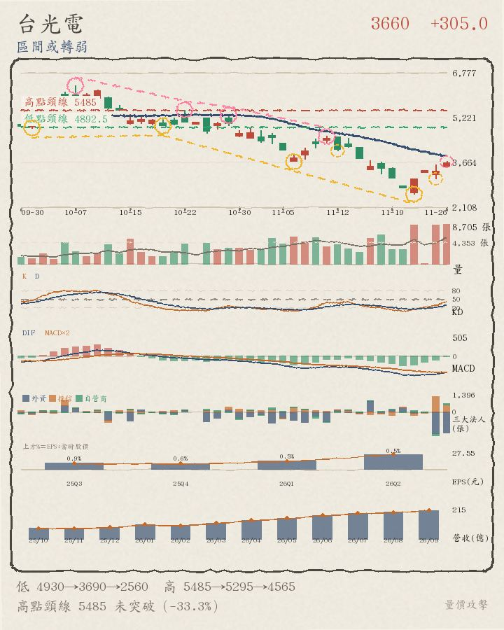
今天收黑、成交量也比平均少、跌破月線 3833.25，離高點頸線 5485 還差 34.3%，轉折還沒走出明顯方向。
- 月線位置：收盤 3605 在月線 3833.25 之下；5 日線 3421 也在月線之下（短均在下）；月線走平或向下、5 日線向上
- 量能：成交量是 20 日均量的 0.95 倍，跟 20 日均量差不多
- 關鍵價位：高點頸線 5485 還沒突破，差 34.3%；最近轉折高點 4565（低於 21.0%）；最近轉折低點 2560（高於 40.8%）
- 轉折結構：低點 4930、3690、2560 與高點 5485、5295、4565 都沒有明顯遞增，屬於區間震盪或轉弱；還沒確認的轉折低點 11-12 4065、11-25 3100；還沒確認的轉折高點 11-27 3720（圖上虛線小圈）
區間或轉弱 成交金額 160.56 億・全榜第 7 名（上市第 6 名）
好條件 2/4：在月線之下、月線下彎
不好條件 1/5：外資賣超

今天收黑、成交量也比平均少、跌破月線 260.475，離高點頸線 325.5 還差 26.0%，轉折還沒走出明顯方向。
- 月線位置：收盤 241 在月線 260.475 之下；5 日線 237.4 也在月線之下（短均在下）；月線走平或向下、5 日線走平或向下
- 量能：成交量是 20 日均量的 0.67 倍，比 20 日均量少很多
- 關鍵價位：高點頸線 325.5 還沒突破，差 26.0%；最近轉折高點 325.5（低於 26.0%）；最近轉折低點 196（高於 23.0%）
- 轉折結構：低點 295、224.5、196 與高點 325.5、325、325.5 都沒有明顯遞增，屬於區間震盪或轉弱；還沒確認的轉折低點 11-25 224.5；還沒確認的轉折高點 11-25 250.5、11-27 251（圖上虛線小圈）
區間或轉弱 成交金額 160.01 億・全榜第 8 名（上市第 7 名）
好條件 3/4：在月線之下、月線下彎、外資買超
不好條件 0/5：無

今天帶量收黑、跌破月線 871.95，離高點頸線 1560 還差 54.3%，轉折還沒走出明顯方向。
- 月線位置：收盤 713 在月線 871.95 之下；5 日線 703.2 也在月線之下（短均在下）；月線走平或向下、5 日線走平或向下
- 量能：成交量是 20 日均量的 1.97 倍，比 20 日均量大不少；收黑卻量增，量價背離
- 關鍵價位：高點頸線 1560 還沒突破，差 54.3%；最近轉折高點 1080（低於 34.0%）；最近轉折低點 569（高於 25.3%）
- 轉折結構：低點 1050、867、569 與高點 1560、1400、1080 都沒有明顯遞增，屬於區間震盪或轉弱；還沒確認的轉折低點 11-25 664、11-27 700；還沒確認的轉折高點 11-25 755、11-27 766（圖上虛線小圈）
區間或轉弱 成交金額 143.93 億・全榜第 9 名（上市第 8 名）
好條件 2/4：在月線之下、月線下彎
不好條件 1/5：外資賣超

今天收紅、但成交量比平均少、跌破月線 379.9，離高點頸線 686 還差 49.9%，轉折還沒走出明顯方向。
- 月線位置：收盤 344 在月線 379.9 之下；5 日線 328.7 也在月線之下（短均在下）；月線走平或向下、5 日線走平或向下
- 量能：成交量是 20 日均量的 0.93 倍，比 20 日均量少一些；收紅但量縮，量價背離
- 關鍵價位：高點頸線 686 還沒突破，差 49.9%；最近轉折高點 442（低於 22.2%）；最近轉折低點 288.5（高於 19.2%）
- 轉折結構：低點 506、364.5、288.5 與高點 601、686、442 都沒有明顯遞增，屬於區間震盪或轉弱；還沒確認的轉折低點 11-12 405.5、11-25 307；還沒確認的轉折高點 11-24 341、11-27 356（圖上虛線小圈）
區間或轉弱 成交金額 132.35 億・全榜第 11 名（上市第 9 名）
好條件 1/4：月線下彎
不好條件 3/5：站上月線、量價攻擊（收紅＋大量）、外資賣超

今天帶量收紅、站上月線 2678，離高點頸線 3700 還差 24.2%，轉折還沒走出明顯方向。
- 月線位置：收盤 2805 在月線 2678 之上；5 日線 2622 也在月線之下（短均在下）；月線走平或向下、5 日線向上
- 量能：成交量是 20 日均量的 1.26 倍，比 20 日均量大不少；收紅又量增，量價配合
- 關鍵價位：高點頸線 3700 還沒突破，差 24.2%；最近轉折高點 3060（低於 8.3%）；最近轉折低點 2005（高於 39.9%）
- 轉折結構：低點 2310、2310、2005 與高點 3700、3450、3060 都沒有明顯遞增，屬於區間震盪或轉弱；還沒確認的轉折低點 11-18 2440、11-25 2360；還沒確認的轉折高點 11-18 2715、11-27 2910（圖上虛線小圈）
區間或轉弱 成交金額 121.89 億・全榜第 12 名（上市第 10 名）
好條件 1/4：月線下彎
不好條件 3/5：站上月線、量價攻擊（收紅＋大量）、外資賣超
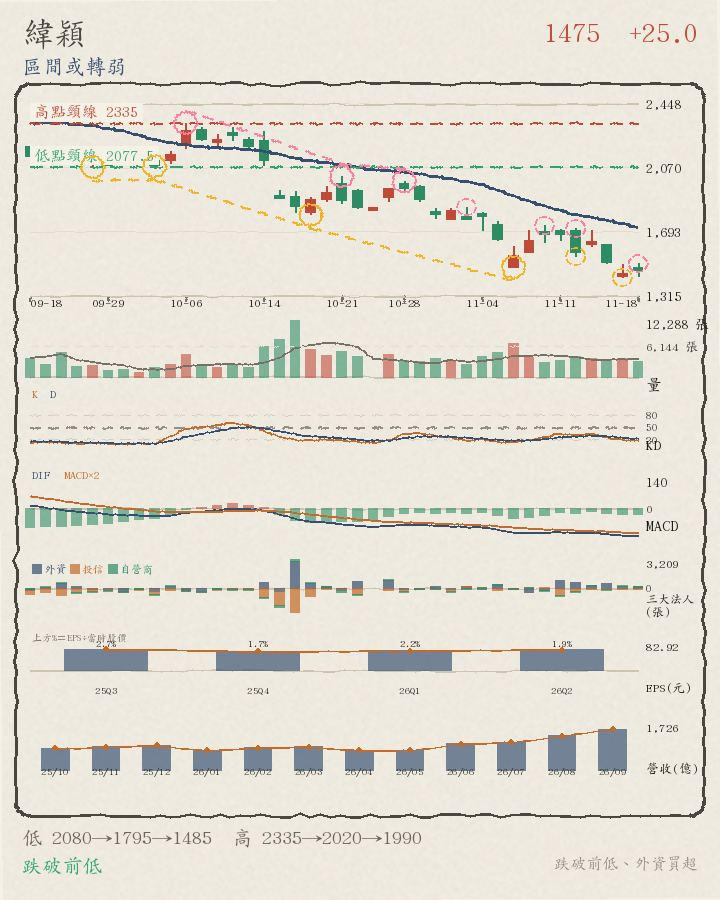
今天帶量收紅、站上月線 1576，離高點頸線 2335 還差 28.5%，轉折還沒走出明顯方向。
- 月線位置：收盤 1670 在月線 1576 之上；5 日線 1511 也在月線之下（短均在下）；月線走平或向下、5 日線向上
- 量能：成交量是 20 日均量的 1.79 倍，比 20 日均量大不少；收紅又量增，量價配合
- 關鍵價位：高點頸線 2335 還沒突破，差 28.5%；最近轉折高點 1990（低於 16.1%）；最近轉折低點 1275（高於 31.0%）
- 轉折結構：低點 1795、1485、1275 與高點 2335、2020、1990 都沒有明顯遞增，屬於區間震盪或轉弱；還沒確認的轉折低點 11-17 1425、11-25 1360；還沒確認的轉折高點 11-24 1510、11-27 1720（圖上虛線小圈）
區間或轉弱 成交金額 117.81 億・全榜第 13 名（上市第 11 名）
好條件 3/4：在月線之下、月線下彎、外資買超
不好條件 0/5：無

今天帶量收黑、跌破月線 4588.5，離高點頸線 7460 還差 43.2%，轉折還沒走出明顯方向。
- 月線位置：收盤 4235 在月線 4588.5 之下；5 日線 4057 也在月線之下（短均在下）；月線走平或向下、5 日線走平或向下
- 量能：成交量是 20 日均量的 1.15 倍，比 20 日均量大不少；收黑卻量增，量價背離
- 關鍵價位：高點頸線 7460 還沒突破，差 43.2%；最近轉折高點 5560（低於 23.8%）；最近轉折低點 3400（高於 24.6%）
- 轉折結構：低點 5970、4075、3400 與高點 7460、6370、5560 都沒有明顯遞增，屬於區間震盪或轉弱；還沒確認的轉折低點 11-25 3790、11-27 4145；還沒確認的轉折高點 11-18 4820、11-27 4465（圖上虛線小圈）
區間或轉弱 成交金額 116.64 億・全榜第 14 名（上市第 12 名）
好條件 3/4：在月線之下、月線下彎、外資買超
不好條件 0/5：無
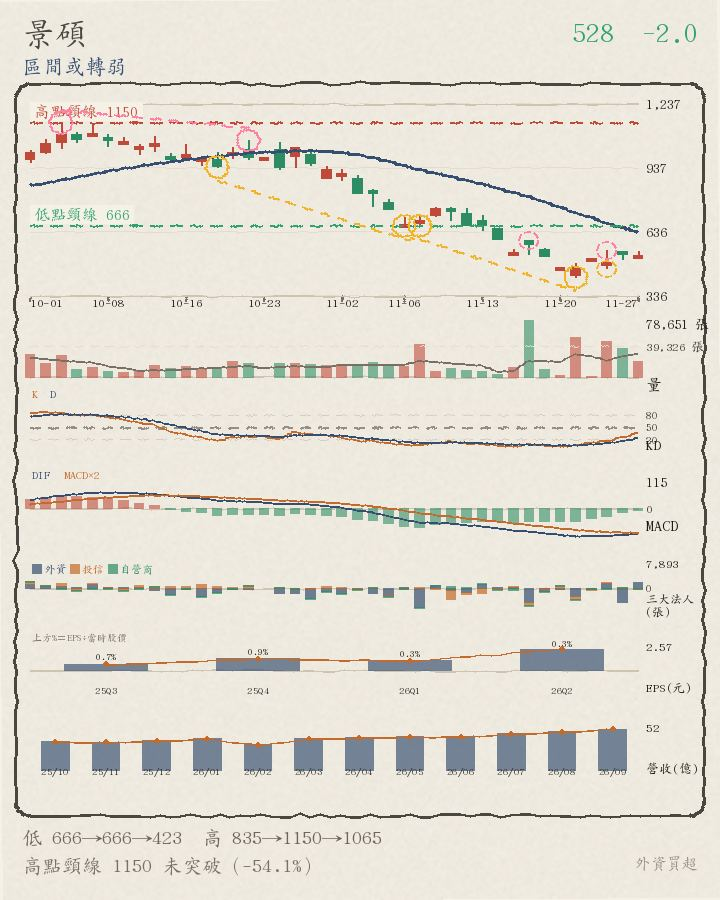
今天收黑、跌破月線 636.125，離高點頸線 1150 還差 54.1%，轉折還沒走出明顯方向。
- 月線位置：收盤 528 在月線 636.125 之下；5 日線 506.9 也在月線之下（短均在下）；月線走平或向下、5 日線走平或向下
- 量能：成交量是 20 日均量的 1.01 倍，跟 20 日均量差不多
- 關鍵價位：高點頸線 1150 還沒突破，差 54.1%；最近轉折高點 1065（低於 50.4%）；最近轉折低點 423（高於 24.8%）
- 轉折結構：低點 666、666、423 與高點 835、1150、1065 都沒有明顯遞增，屬於區間震盪或轉弱；還沒確認的轉折低點 11-25 463；還沒確認的轉折高點 11-18 596、11-25 549（圖上虛線小圈）
區間或轉弱 成交金額 105 億・全榜第 15 名（上市第 13 名）
好條件 3/4：在月線之下、月線下彎、外資買超
不好條件 0/5：無

今天收紅、但成交量比平均少、跌破月線 345.425，離高點頸線 537 還差 42.6%，轉折還沒走出明顯方向。
- 月線位置：收盤 308 在月線 345.425 之下；5 日線 296.5 也在月線之下（短均在下）；月線走平或向下、5 日線走平或向下
- 量能：成交量是 20 日均量的 0.67 倍，比 20 日均量少很多；收紅但量縮，量價背離
- 關鍵價位：高點頸線 537 還沒突破，差 42.6%；最近轉折高點 417（低於 26.1%）；最近轉折低點 255.5（高於 20.5%）
- 轉折結構：低點 412、324、255.5 與高點 537、497.5、417 都沒有明顯遞增，屬於區間震盪或轉弱；還沒確認的轉折低點 11-25 278.5；還沒確認的轉折高點 11-24 309、11-27 312（圖上虛線小圈）
區間或轉弱 成交金額 100.16 億・全榜第 17 名（上市第 14 名）
好條件 2/4：在月線之下、月線下彎
不好條件 1/5：外資賣超

今天收黑、成交量也比平均少、跌破月線 95.54，離高點頸線 165 還差 47.0%，轉折還沒走出明顯方向。
- 月線位置：收盤 87.5 在月線 95.54 之下；5 日線 89.82 也在月線之下（短均在下）；月線走平或向下、5 日線走平或向下
- 量能：成交量是 20 日均量的 0.66 倍，比 20 日均量少很多
- 關鍵價位：高點頸線 165 還沒突破，差 47.0%；最近轉折高點 97.1（低於 9.9%）；最近轉折低點 79.4（高於 10.2%）
- 轉折結構：低點 151.5、88.6、79.4 與高點 165、107.5、97.1 都沒有明顯遞增，屬於區間震盪或轉弱；還沒確認的轉折低點 11-26 86.6（圖上虛線小圈）
區間或轉弱 成交金額 100.15 億・全榜第 18 名（上市第 15 名）
好條件 1/4：月線下彎
不好條件 2/5：站上月線、外資賣超

今天收黑、成交量也比平均少、站上月線 910.9，離高點頸線 1295 還差 28.3%，轉折還沒走出明顯方向。
- 月線位置：收盤 929 在月線 910.9 之上；5 日線 894.2 也在月線之下（短均在下）；月線走平或向下、5 日線向上
- 量能：成交量是 20 日均量的 0.95 倍，跟 20 日均量差不多
- 關鍵價位：高點頸線 1295 還沒突破，差 28.3%；最近轉折高點 1085（低於 14.4%）；最近轉折低點 657（高於 41.4%）
- 轉折結構：低點 1120、782、657 與高點 1295、1190、1085 都沒有明顯遞增，屬於區間震盪或轉弱；還沒確認的轉折低點 11-25 827、11-27 923；還沒確認的轉折高點 11-18 906、11-26 995（圖上虛線小圈）
世芯-KY 3661 上市
3595 -140.0
區間或轉弱 成交金額 91.8 億・全榜第 19 名（上市第 16 名）
好條件 0/4：無
不好條件 3/5：站上月線、月線向上、外資賣超
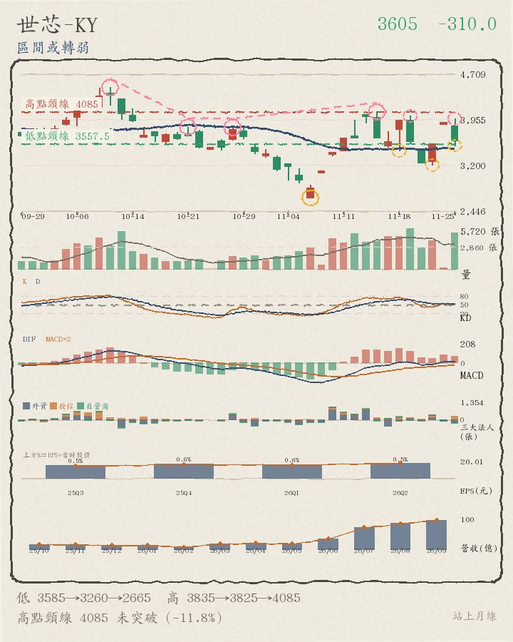
今天收黑、成交量也比平均少、站上月線 3491.75，離高點頸線 4085 還差 12.0%，轉折還沒走出明顯方向。
- 月線位置：收盤 3595 在月線 3491.75 之上；5 日線 3682 也在月線之上（短均在上）；月線向上、5 日線向上
- 量能：成交量是 20 日均量的 0.80 倍，比 20 日均量少很多
- 關鍵價位：高點頸線 4085 還沒突破，差 12.0%；最近轉折高點 4085（低於 12.0%）；最近轉折低點 3210（高於 12.0%）
- 轉折結構：低點 3260、2665、3210 與高點 3835、3825、4085 都沒有明顯遞增，屬於區間震盪或轉弱；還沒確認的轉折低點 11-25 3530、11-27 3540；還沒確認的轉折高點 11-19 4020、11-25 3970（圖上虛線小圈）
區間或轉弱 成交金額 90.61 億・全榜第 20 名（上市第 17 名）
好條件 2/4：在月線之下、月線下彎
不好條件 1/5：外資賣超

今天收紅、但成交量比平均少、跌破月線 554.35，離高點頸線 709 還差 27.5%，轉折還沒走出明顯方向。
- 月線位置：收盤 514 在月線 554.35 之下；5 日線 505 也在月線之下（短均在下）；月線走平或向下、5 日線走平或向下
- 量能：成交量是 20 日均量的 0.62 倍，比 20 日均量少很多；收紅但量縮，量價背離
- 關鍵價位：高點頸線 709 還沒突破，差 27.5%；最近轉折高點 630（低於 18.4%）；最近轉折低點 451（高於 14.0%）
- 轉折結構：低點 639、515、451 與高點 699、709、630 都沒有明顯遞增，屬於區間震盪或轉弱；還沒確認的轉折低點 11-17 506、11-25 477；還沒確認的轉折高點 11-24 530、11-27 524（圖上虛線小圈）
區間或轉弱 成交金額 88.81 億・全榜第 21 名（上市第 18 名）
好條件 2/4：月線下彎、外資買超
不好條件 2/5：站上月線、量價攻擊（收紅＋大量）

今天帶量收紅、站上月線 178.25，離高點頸線 266 還差 30.6%，轉折還沒走出明顯方向。
- 月線位置：收盤 184.5 在月線 178.25 之上；5 日線 165.9 也在月線之下（短均在下）；月線走平或向下、5 日線走平或向下
- 量能：成交量是 20 日均量的 1.57 倍，比 20 日均量大不少；收紅又量增，量價配合
- 關鍵價位：高點頸線 266 還沒突破，差 30.6%；最近轉折高點 215.5（低於 14.4%）；最近轉折低點 139.5（高於 32.3%）
- 轉折結構：低點 228、149、139.5 與高點 261、266、215.5 都沒有明顯遞增，屬於區間震盪或轉弱；還沒確認的轉折低點 11-18 168.5、11-25 153；還沒確認的轉折高點 11-24 169.5、11-27 184.5（圖上虛線小圈）
剛突破前高 成交金額 83.31 億・全榜第 22 名（上市第 19 名）
好條件 1/4：月線下彎
不好條件 2/5：站上月線、外資賣超

今天收黑、站上月線 1450.75，離高點頸線 1875 還差 17.1%，高點還在墊高（但底部沒同步墊高）。
- 月線位置：收盤 1555 在月線 1450.75 之上；5 日線 1497 也在月線之上（短均在上）；月線走平或向下、5 日線向上
- 量能：成交量是 20 日均量的 1.03 倍，跟 20 日均量差不多
- 關鍵價位：高點頸線 1875 還沒突破，差 17.1%；最近轉折高點 1535（高於 1.3%）；最近轉折低點 1200（高於 29.6%）
- 轉折結構：高點 1875、1665、1535 墊高 5.5%（頭頭高），但低點 1910、1245、1200 沒有同步墊高；還沒確認的轉折低點 11-25 1355、11-27 1535；還沒確認的轉折高點 11-26 1620（圖上虛線小圈）
區間或轉弱 成交金額 82.21 億・全榜第 23 名（上市第 20 名）
好條件 2/4：在月線之下、月線下彎
不好條件 1/5：外資賣超

今天收黑、成交量也比平均少、跌破月線 65.66，離高點頸線 89.5 還差 37.0%，轉折還沒走出明顯方向。
- 月線位置：收盤 56.4 在月線 65.66 之下；5 日線 59.6 也在月線之下（短均在下）；月線走平或向下、5 日線走平或向下
- 量能：成交量是 20 日均量的 0.70 倍，比 20 日均量少很多
- 關鍵價位：高點頸線 89.5 還沒突破，差 37.0%；最近轉折高點 89.5（低於 37.0%）；最近轉折低點 49.5（高於 13.9%）
- 轉折結構：低點 58.8、54.1、49.5 與高點 73.6、70、89.5 都沒有明顯遞增，屬於區間震盪或轉弱；還沒確認的轉折低點 11-27 56.4；還沒確認的轉折高點 11-25 69.6（圖上虛線小圈）
區間或轉弱 成交金額 78.47 億・全榜第 24 名（上市第 21 名）
好條件 3/4：在月線之下、月線下彎、外資買超
不好條件 0/5：無

今天收紅、但成交量比平均少、跌破月線 5067.5，離高點頸線 6655 還差 26.6%，轉折還沒走出明顯方向。
- 月線位置：收盤 4885 在月線 5067.5 之下；5 日線 4275 也在月線之下（短均在下）；月線走平或向下、5 日線走平或向下
- 量能：成交量是 20 日均量的 0.69 倍，比 20 日均量少很多；收紅但量縮，量價背離
- 關鍵價位：高點頸線 6655 還沒突破，差 26.6%；最近轉折高點 6360（低於 23.2%）；最近轉折低點 3335（高於 46.5%）
- 轉折結構：低點 5710、4970、3335 與高點 6655、6595、6360 都沒有明顯遞增，屬於區間震盪或轉弱；還沒確認的轉折低點 11-18 4075、11-25 3845；還沒確認的轉折高點 11-18 4765、11-27 5040（圖上虛線小圈）
高點墊高、底部不穩 成交金額 77.68 億・全榜第 25 名（上市第 22 名）
好條件 0/4：無
不好條件 3/5：站上月線、月線向上、外資賣超

今天帶量收黑、站上月線 162.85，離高點頸線 171 還差 3.2%，高點還在墊高（但底部沒同步墊高）。
- 月線位置：收盤 165.5 在月線 162.85 之上；5 日線 164.9 也在月線之上（短均在上）；月線向上、5 日線向上
- 量能：成交量是 20 日均量的 1.87 倍，比 20 日均量大不少；收黑卻量增，量價背離
- 關鍵價位：高點頸線 171 還沒突破，差 3.2%；最近轉折高點 171（低於 3.2%）；最近轉折低點 160（高於 3.4%）
- 轉折結構：高點 147、166.5、171 墊高 16.3%（頭頭高），但低點 156.5、156.5、160 沒有同步墊高；還沒確認的轉折低點 11-17 162、11-24 160.5；還沒確認的轉折高點 11-24 170.5、11-26 170（圖上虛線小圈）
區間或轉弱 成交金額 75.02 億・全榜第 26 名（上市第 23 名）
好條件 3/4：在月線之下、月線下彎、外資買超
不好條件 0/5：無

今天收紅、但成交量比平均少、跌破月線 228.15，離高點頸線 253.5 還差 13.6%，轉折還沒走出明顯方向。
- 月線位置：收盤 219 在月線 228.15 之下；5 日線 214.9 也在月線之下（短均在下）；月線走平或向下、5 日線走平或向下
- 量能：成交量是 20 日均量的 0.57 倍，比 20 日均量少很多；收紅但量縮，量價背離
- 關鍵價位：高點頸線 253.5 還沒突破，差 13.6%；最近轉折高點 226.5（低於 3.3%）；最近轉折低點 212.5（高於 3.1%）
- 轉折結構：低點 247、237、212.5 與高點 253.5、247.5、226.5 都沒有明顯遞增，屬於區間震盪或轉弱；還沒確認的轉折低點 11-23 205、11-25 204；還沒確認的轉折高點 11-19 225.5、11-27 222（圖上虛線小圈）
區間或轉弱 成交金額 74.29 億・全榜第 27 名（上市第 24 名）
好條件 2/4：在月線之下、月線下彎
不好條件 1/5：外資賣超

今天帶量收黑、跌破月線 7409.75，離高點頸線 10580 還差 33.6%，轉折還沒走出明顯方向。
- 月線位置：收盤 7025 在月線 7409.75 之下；5 日線 6505 也在月線之下（短均在下）；月線走平或向下、5 日線向上
- 量能：成交量是 20 日均量的 1.32 倍，比 20 日均量大不少；收黑卻量增，量價背離
- 關鍵價位：高點頸線 10580 還沒突破，差 33.6%；最近轉折高點 9100（低於 22.8%）；最近轉折低點 4980（高於 41.1%）
- 轉折結構：低點 9500、7200、4980 與高點 10580、10290、9100 都沒有明顯遞增，屬於區間震盪或轉弱；還沒確認的轉折低點 11-25 6015；還沒確認的轉折高點 11-27 7385（圖上虛線小圈）
剛突破前高 成交金額 73.71 億・全榜第 28 名（上市第 25 名）
好條件 1/4：月線下彎
不好條件 3/5：站上月線、量價攻擊（收紅＋大量）、外資賣超
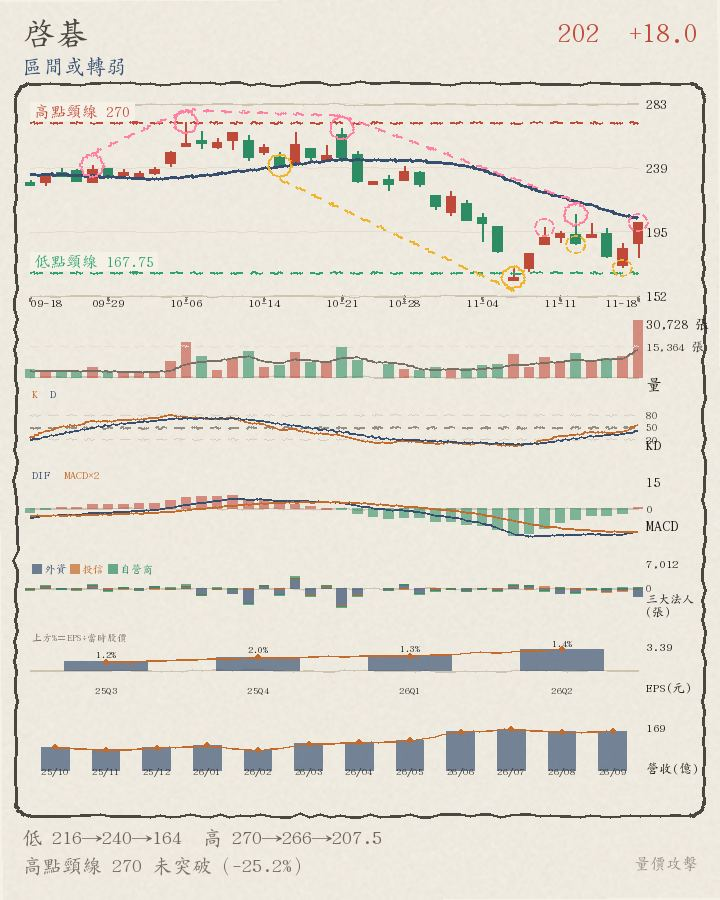
今天帶量收紅、站上月線 189.375，離高點頸線 266 還差 24.4%，高點還在墊高（但底部沒同步墊高）。
- 月線位置：收盤 201 在月線 189.375 之上；5 日線 188.2 也在月線之下（短均在下）；月線走平或向下、5 日線向上
- 量能：成交量是 20 日均量的 3.14 倍，比 20 日均量大不少；收紅又量增，量價配合
- 關鍵價位：高點頸線 266 還沒突破，差 24.4%；最近轉折高點 203.5（低於 1.2%）；最近轉折低點 160（高於 25.6%）
- 轉折結構：高點 266、207.5、203.5 墊高 2.5%（頭頭高），但低點 164.5、171、160 沒有同步墊高；還沒確認的轉折低點 11-12 187、11-25 175.5；還沒確認的轉折高點 11-24 194.5、11-27 208.5（圖上虛線小圈）
區間或轉弱 成交金額 66.74 億・全榜第 29 名（上市第 26 名）
好條件 3/4：在月線之下、月線下彎、外資買超
不好條件 0/5：無

今天帶量收黑、跌破月線 254，離高點頸線 274.5 還差 9.3%，轉折還沒走出明顯方向。
- 月線位置：收盤 249 在月線 254 之下；5 日線 249.4 也在月線之下（短均在下）；月線走平或向下、5 日線走平或向下
- 量能：成交量是 20 日均量的 1.71 倍，比 20 日均量大不少；收黑卻量增，量價背離
- 關鍵價位：高點頸線 274.5 還沒突破，差 9.3%；最近轉折高點 264.5（低於 5.9%）；最近轉折低點 230（高於 8.3%）
- 轉折結構：低點 254、236.5、230 與高點 270.5、274.5、264.5 都沒有明顯遞增，屬於區間震盪或轉弱；還沒確認的轉折低點 11-17 253、11-27 247；還沒確認的轉折高點 11-24 257、11-27 258.5（圖上虛線小圈）
貿聯-KY 3665 上市
1680 -110.0
剛突破前高 成交金額 65.33 億・全榜第 30 名（上市第 27 名）
好條件 1/4：月線下彎
不好條件 2/5：站上月線、外資賣超

今天收黑、成交量也比平均少、站上月線 1520，離高點頸線 2685 還差 37.4%，高點還在墊高（但底部沒同步墊高）。
- 月線位置：收盤 1680 在月線 1520 之上；5 日線 1620 也在月線之上（短均在上）；月線走平或向下、5 日線向上
- 量能：成交量是 20 日均量的 0.94 倍，比 20 日均量少一些
- 關鍵價位：高點頸線 2685 還沒突破，差 37.4%；最近轉折高點 1630（高於 3.1%）；最近轉折低點 1240（高於 35.5%）
- 轉折結構：高點 2685、2080、1630 墊高 9.8%（頭頭高），但低點 1810、1295、1240 沒有同步墊高；還沒確認的轉折低點 11-25 1540、11-27 1680；還沒確認的轉折高點 11-19 1590、11-26 1790（圖上虛線小圈）
區間或轉弱 成交金額 63.74 億・全榜第 31 名（上市第 28 名）
好條件 2/4：在月線之下、月線下彎
不好條件 1/5：外資賣超

今天收黑、成交量也比平均少、跌破月線 488.3，離高點頸線 885 還差 53.0%，轉折還沒走出明顯方向。
- 月線位置：收盤 416 在月線 488.3 之下；5 日線 411.2 也在月線之下（短均在下）；月線走平或向下、5 日線走平或向下
- 量能：成交量是 20 日均量的 0.88 倍，比 20 日均量少一些
- 關鍵價位：高點頸線 885 還沒突破，差 53.0%；最近轉折高點 602（低於 30.9%）；最近轉折低點 321.5（高於 29.4%）
- 轉折結構：低點 721、481.5、321.5 與高點 858、885、602 都沒有明顯遞增，屬於區間震盪或轉弱；還沒確認的轉折低點 11-12 522、11-25 387；還沒確認的轉折高點 11-25 439、11-27 438.5（圖上虛線小圈）
區間或轉弱 成交金額 60.49 億・全榜第 32 名（上市第 29 名）
好條件 2/4：在月線之下、月線下彎
不好條件 1/5：外資賣超

今天收黑、成交量也比平均少、跌破月線 6556.25，離高點頸線 8645 還差 41.1%，轉折還沒走出明顯方向。
- 月線位置：收盤 5090 在月線 6556.25 之下；5 日線 5260 也在月線之下（短均在下）；月線走平或向下、5 日線走平或向下
- 量能：成交量是 20 日均量的 0.36 倍，比 20 日均量少很多
- 關鍵價位：高點頸線 8645 還沒突破，差 41.1%；最近轉折高點 8645（低於 41.1%）；最近轉折低點 4860（高於 4.7%）
- 轉折結構：低點 7200、5765、4860 與高點 8490、8255、8645 都沒有明顯遞增，屬於區間震盪或轉弱；還沒確認的轉折低點 11-27 4855；還沒確認的轉折高點 11-24 5630、11-26 5510（圖上虛線小圈）
區間或轉弱 成交金額 60 億・全榜第 33 名（上市第 30 名）
好條件 3/4：在月線之下、月線下彎、外資買超
不好條件 0/5：無

今天收紅、但成交量比平均少、跌破月線 118.76，離高點頸線 184 還差 43.5%，轉折還沒走出明顯方向。
- 月線位置：收盤 104 在月線 118.76 之下；5 日線 100.5 也在月線之下（短均在下）；月線走平或向下、5 日線走平或向下
- 量能：成交量是 20 日均量的 0.85 倍，比 20 日均量少一些；收紅但量縮，量價背離
- 關鍵價位：高點頸線 184 還沒突破，差 43.5%；最近轉折高點 142（低於 26.8%）；最近轉折低點 88.2（高於 17.9%）
- 轉折結構：低點 151、115、88.2 與高點 184、178.5、142 都沒有明顯遞增，屬於區間震盪或轉弱；還沒確認的轉折低點 11-25 94.5；還沒確認的轉折高點 11-24 105、11-27 106（圖上虛線小圈）
區間或轉弱 成交金額 58.63 億・全榜第 34 名（上市第 31 名）
好條件 2/4：在月線之下、月線下彎
不好條件 1/5：外資賣超

今天收黑、成交量也比平均少、跌破月線 390.925，離高點頸線 614 還差 43.6%，轉折還沒走出明顯方向。
- 月線位置：收盤 346.5 在月線 390.925 之下；5 日線 345.3 也在月線之下（短均在下）；月線走平或向下、5 日線走平或向下
- 量能：成交量是 20 日均量的 0.68 倍，比 20 日均量少很多
- 關鍵價位：高點頸線 614 還沒突破，差 43.6%；最近轉折高點 466.5（低於 25.7%）；最近轉折低點 290（高於 19.5%）
- 轉折結構：低點 518、355、290 與高點 613、614、466.5 都沒有明顯遞增，屬於區間震盪或轉弱；還沒確認的轉折低點 11-12 429、11-25 328.5；還沒確認的轉折高點 11-25 367.5、11-27 363.5（圖上虛線小圈）
區間或轉弱 成交金額 55.37 億・全榜第 35 名（上市第 32 名）
好條件 3/4：在月線之下、月線下彎、外資買超
不好條件 0/5：無
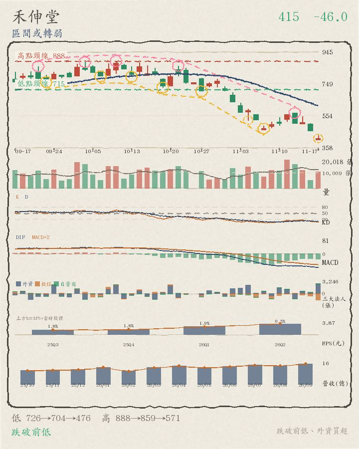
今天帶量收黑、跌破月線 454.4，離高點頸線 888 還差 60.2%，轉折還沒走出明顯方向。
- 月線位置：收盤 353 在月線 454.4 之下；5 日線 348.2 也在月線之下（短均在下）；月線走平或向下、5 日線走平或向下
- 量能：成交量是 20 日均量的 1.45 倍，比 20 日均量大不少；收黑卻量增，量價背離
- 關鍵價位：高點頸線 888 還沒突破，差 60.2%；最近轉折高點 571（低於 38.2%）；最近轉折低點 294.5（高於 19.9%）
- 轉折結構：低點 704、475.5、294.5 與高點 888、859、571 都沒有明顯遞增，屬於區間震盪或轉弱；還沒確認的轉折低點 11-25 327；還沒確認的轉折高點 11-25 367、11-27 386（圖上虛線小圈）
區間或轉弱 成交金額 51.16 億・全榜第 37 名（上市第 33 名）
好條件 3/4：在月線之下、月線下彎、外資買超
不好條件 0/5：無

今天帶量收黑、跌破月線 107.82，離高點頸線 117.5 還差 13.2%，轉折還沒走出明顯方向。
- 月線位置：收盤 102 在月線 107.82 之下；5 日線 101.3 也在月線之下（短均在下）；月線走平或向下、5 日線走平或向下
- 量能：成交量是 20 日均量的 1.32 倍，比 20 日均量大不少；收黑卻量增，量價背離
- 關鍵價位：高點頸線 117.5 還沒突破，差 13.2%；最近轉折高點 115.5（低於 11.7%）；最近轉折低點 91.5（高於 11.5%）
- 轉折結構：低點 110、101、91.5 與高點 117.5、117.5、115.5 都沒有明顯遞增，屬於區間震盪或轉弱；還沒確認的轉折低點 11-17 106、11-25 96.2；還沒確認的轉折高點 11-24 104.5、11-27 105（圖上虛線小圈）
底部墊高、未過前高 成交金額 48.03 億・全榜第 38 名（上市第 34 名）
好條件 3/4：跌破前低、在月線之下、月線下彎
不好條件 1/5：外資賣超

今天帶量收黑、跌破月線 52.755，跌破前一個轉折低點（高點頸線 56.5 還在收盤上方），底部還在墊高（但高點沒同步創高）。
- 月線位置：收盤 47.05 在月線 52.755 之下；5 日線 50 也在月線之下（短均在下）；月線走平或向下、5 日線走平或向下
- 量能：成交量是 20 日均量的 2.39 倍，比 20 日均量大不少；收黑卻量增，量價背離
- 關鍵價位：高點頸線 56.5 還沒突破、還在收盤上方 16.7%；最近轉折高點 56.5（低於 16.7%）；最近轉折低點 50.4（低於 6.6%）
- 轉折結構：低點 48.35、49、50.4 墊高 4.2%（底底高），但高點 56、56、56.5 沒有同步創高；還沒確認的轉折低點 11-23 49.65、11-27 47.05；還沒確認的轉折高點 11-16 56.3、11-24 55（圖上虛線小圈）
區間或轉弱 成交金額 44.12 億・全榜第 39 名（上市第 35 名）
好條件 2/4：在月線之下、月線下彎
不好條件 1/5：外資賣超

今天收黑、成交量也比平均少、跌破月線 253.875，離高點頸線 431.5 還差 51.7%，轉折還沒走出明顯方向。
- 月線位置：收盤 208.5 在月線 253.875 之下；5 日線 202.9 也在月線之下（短均在下）；月線走平或向下、5 日線走平或向下
- 量能：成交量是 20 日均量的 0.88 倍，比 20 日均量少一些
- 關鍵價位：高點頸線 431.5 還沒突破，差 51.7%；最近轉折高點 307（低於 32.1%）；最近轉折低點 172.5（高於 20.9%）
- 轉折結構：低點 355.5、253.5、172.5 與高點 422、431.5、307 都沒有明顯遞增，屬於區間震盪或轉弱；還沒確認的轉折低點 11-12 272、11-25 191；還沒確認的轉折高點 11-25 212、11-27 218.5（圖上虛線小圈）
區間或轉弱 成交金額 41.08 億・全榜第 41 名（上市第 36 名）
好條件 3/4：在月線之下、月線下彎、外資買超
不好條件 0/5：無

今天收黑、成交量也比平均少、跌破月線 837.95，離高點頸線 1330 還差 46.8%，轉折還沒走出明顯方向。
- 月線位置：收盤 708 在月線 837.95 之下；5 日線 718.6 也在月線之下（短均在下）；月線走平或向下、5 日線走平或向下
- 量能：成交量是 20 日均量的 0.80 倍，比 20 日均量少很多
- 關鍵價位：高點頸線 1330 還沒突破，差 46.8%；最近轉折高點 1085（低於 34.7%）；最近轉折低點 596（高於 18.8%）
- 轉折結構：低點 1005、762、596 與高點 1330、1330、1085 都沒有明顯遞增，屬於區間震盪或轉弱；還沒確認的轉折低點 11-25 681、11-27 698；還沒確認的轉折高點 11-25 785、11-27 777（圖上虛線小圈）
區間或轉弱 成交金額 39.51 億・全榜第 43 名（上市第 37 名）
好條件 3/4：在月線之下、月線下彎、外資買超
不好條件 0/5：無

今天帶量收黑、跌破月線 3721.75，離高點頸線 6515 還差 53.1%，轉折還沒走出明顯方向。
- 月線位置：收盤 3055 在月線 3721.75 之下；5 日線 3076 也在月線之下（短均在下）；月線走平或向下、5 日線走平或向下
- 量能：成交量是 20 日均量的 1.27 倍，比 20 日均量大不少；收黑卻量增，量價背離
- 關鍵價位：高點頸線 6515 還沒突破，差 53.1%；最近轉折高點 4405（低於 30.6%）；最近轉折低點 2680（高於 14.0%）
- 轉折結構：低點 5035、3585、2680 與高點 6515、5610、4405 都沒有明顯遞增，屬於區間震盪或轉弱；還沒確認的轉折低點 11-25 2900、11-27 2960；還沒確認的轉折高點 11-18 3670、11-25 3495（圖上虛線小圈）
區間或轉弱 成交金額 38.24 億・全榜第 44 名（上市第 38 名）
好條件 2/4：在月線之下、月線下彎
不好條件 1/5：外資賣超

今天帶量收黑、跌破月線 40.795，離高點頸線 47.5 還差 26.2%，轉折還沒走出明顯方向。
- 月線位置：收盤 35.05 在月線 40.795 之下；5 日線 36.8 也在月線之下（短均在下）；月線走平或向下、5 日線走平或向下
- 量能：成交量是 20 日均量的 2.29 倍，比 20 日均量大不少；收黑卻量增，量價背離
- 關鍵價位：高點頸線 47.5 還沒突破，差 26.2%；最近轉折高點 44.45（低於 21.1%）；最近轉折低點 34.5（高於 1.6%）
- 轉折結構：低點 43.8、38.9、34.5 與高點 46.15、47.5、44.45 都沒有明顯遞增，屬於區間震盪或轉弱；還沒確認的轉折低點 11-27 35.05；還沒確認的轉折高點 11-24 40.35（圖上虛線小圈）
區間或轉弱 成交金額 37.52 億・全榜第 45 名（上市第 39 名）
好條件 3/4：在月線之下、月線下彎、外資買超
不好條件 0/5：無
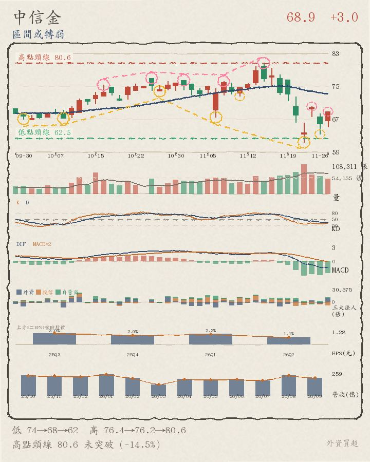
今天收黑、成交量也比平均少、跌破月線 72.765，離高點頸線 80.6 還差 14.5%，轉折還沒走出明顯方向。
- 月線位置：收盤 68.9 在月線 72.765 之下；5 日線 67.48 也在月線之下（短均在下）；月線走平或向下、5 日線走平或向下
- 量能：成交量是 20 日均量的 0.95 倍，跟 20 日均量差不多
- 關鍵價位：高點頸線 80.6 還沒突破，差 14.5%；最近轉折高點 80.6（低於 14.5%）；最近轉折低點 61.5（高於 12.0%）
- 轉折結構：低點 73.8、67.5、61.5 與高點 76.4、76.2、80.6 都沒有明顯遞增，屬於區間震盪或轉弱；還沒確認的轉折低點 11-25 63.5；還沒確認的轉折高點 11-24 70.1、11-27 69.4（圖上虛線小圈）
高點墊高、底部不穩 成交金額 36.8 億・全榜第 46 名（上市第 40 名）
好條件 0/4：無
不好條件 3/5：站上月線、月線向上、外資賣超
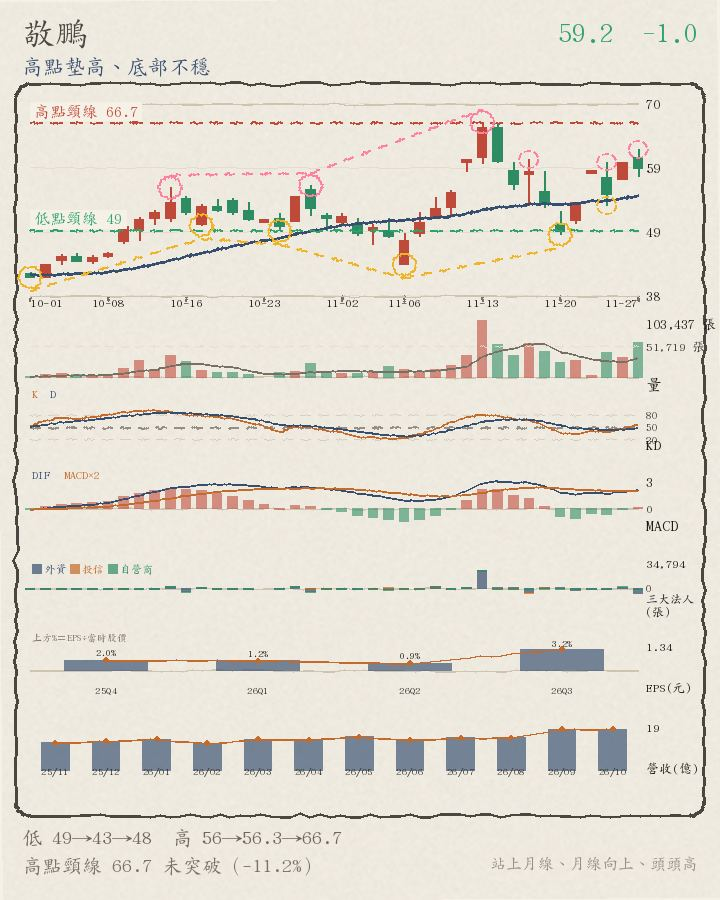
今天帶量收黑、站上月線 54.648，離高點頸線 66.7 還差 11.2%，高點還在墊高（但底部沒同步墊高）。
- 月線位置：收盤 59.2 在月線 54.648 之上；5 日線 57.34 也在月線之上（短均在上）；月線向上、5 日線向上
- 量能：成交量是 20 日均量的 2.10 倍，比 20 日均量大不少；收黑卻量增，量價背離
- 關鍵價位：高點頸線 66.7 還沒突破，差 11.2%；最近轉折高點 66.7（低於 11.2%）；最近轉折低點 48.3（高於 22.6%）
- 轉折結構：高點 56、56.3、66.7 墊高 19.1%（頭頭高），但低點 48.9、43.35、48.3 沒有同步墊高；還沒確認的轉折低點 11-25 53.1；還沒確認的轉折高點 11-25 60.2、11-27 62.3（圖上虛線小圈）
區間或轉弱 成交金額 36.37 億・全榜第 47 名（上市第 41 名）
好條件 2/4：在月線之下、月線下彎
不好條件 1/5：外資賣超
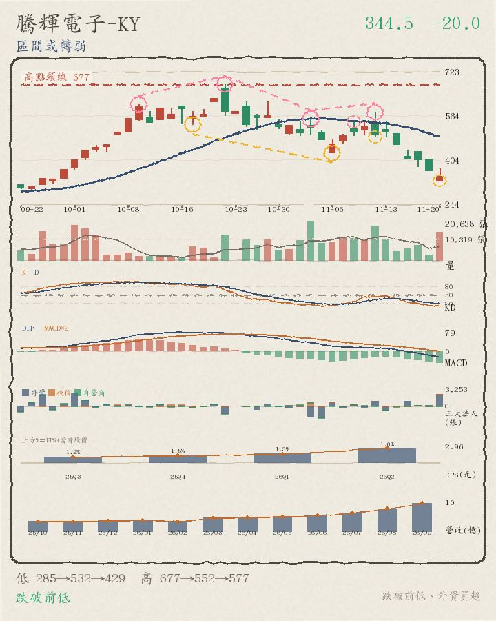
今天收黑、跌破月線 446.05，離高點頸線 677 還差 42.5%，轉折還沒走出明顯方向。
- 月線位置：收盤 389 在月線 446.05 之下；5 日線 381.2 也在月線之下（短均在下）；月線走平或向下、5 日線走平或向下
- 量能：成交量是 20 日均量的 0.98 倍，跟 20 日均量差不多
- 關鍵價位：高點頸線 677 還沒突破，差 42.5%；最近轉折高點 577（低於 32.6%）；最近轉折低點 317.5（高於 22.5%）
- 轉折結構：低點 532、429、317.5 與高點 677、552、577 都沒有明顯遞增，屬於區間震盪或轉弱；還沒確認的轉折低點 11-12 488、11-25 356.5；還沒確認的轉折高點 11-25 409、11-27 415（圖上虛線小圈）
區間或轉弱 成交金額 35.88 億・全榜第 49 名（上市第 42 名）
好條件 2/4：在月線之下、月線下彎
不好條件 1/5：外資賣超

今天收黑、成交量也比平均少、跌破月線 203.25，離高點頸線 310 還差 40.6%，轉折還沒走出明顯方向。
- 月線位置：收盤 184 在月線 203.25 之下；5 日線 174.9 也在月線之下（短均在下）；月線走平或向下、5 日線走平或向下
- 量能：成交量是 20 日均量的 0.69 倍，比 20 日均量少很多
- 關鍵價位：高點頸線 310 還沒突破，差 40.6%；最近轉折高點 235（低於 21.7%）；最近轉折低點 146（高於 26.0%）
- 轉折結構：低點 255、201、146 與高點 310、284.5、235 都沒有明顯遞增，屬於區間震盪或轉弱；還沒確認的轉折低點 11-17 173.5、11-25 161.5；還沒確認的轉折高點 11-18 194、11-26 189.5（圖上虛線小圈）
區間或轉弱 成交金額 35.19 億・全榜第 50 名（上市第 43 名）
好條件 3/4：在月線之下、月線下彎、外資買超
不好條件 0/5：無

今天收黑、成交量也比平均少、跌破月線 714.45，離高點頸線 1030 還差 42.7%，轉折還沒走出明顯方向。
- 月線位置：收盤 590 在月線 714.45 之下；5 日線 596.2 也在月線之下（短均在下）；月線走平或向下、5 日線走平或向下
- 量能：成交量是 20 日均量的 0.88 倍，比 20 日均量少一些
- 關鍵價位：高點頸線 1030 還沒突破，差 42.7%；最近轉折高點 960（低於 38.5%）；最近轉折低點 466（高於 26.6%）
- 轉折結構：低點 700、700、466 與高點 1030、1030、960 都沒有明顯遞增，屬於區間震盪或轉弱；還沒確認的轉折低點 11-25 562、11-27 580；還沒確認的轉折高點 11-25 655（圖上虛線小圈）
區間或轉弱 成交金額 34.31 億・全榜第 51 名（上市第 44 名）
好條件 3/4：跌破前低、在月線之下、月線下彎
不好條件 1/5：外資賣超

今天帶量收黑、跌破月線 40.608，跌破前一個轉折低點（高點頸線 44.8 還在收盤上方），轉折還沒走出明顯方向。
- 月線位置：收盤 35.7 在月線 40.608 之下；5 日線 37.35 也在月線之下（短均在下）；月線走平或向下、5 日線走平或向下
- 量能：成交量是 20 日均量的 2.28 倍，比 20 日均量大不少；收黑卻量增，量價背離
- 關鍵價位：高點頸線 44.8 還沒突破、還在收盤上方 20.3%；最近轉折高點 43.95（低於 18.8%）；最近轉折低點 36.2（低於 1.4%）
- 轉折結構：低點 40.45、38.8、36.2 與高點 42.1、44.8、43.95 都沒有明顯遞增，屬於區間震盪或轉弱；還沒確認的轉折低點 11-27 35.7；還沒確認的轉折高點 11-24 41.4（圖上虛線小圈）
區間或轉弱 成交金額 33.77 億・全榜第 52 名（上市第 45 名）
好條件 3/4：在月線之下、月線下彎、外資買超
不好條件 0/5：無
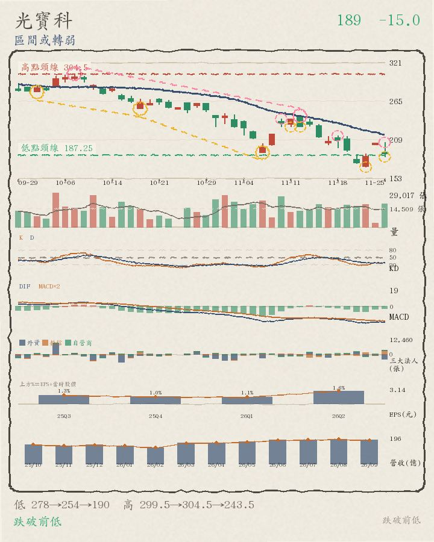
今天收黑、成交量也比平均少、跌破月線 211.3，離高點頸線 304.5 還差 35.8%，轉折還沒走出明顯方向。
- 月線位置：收盤 195.5 在月線 211.3 之下；5 日線 194.5 也在月線之下（短均在下）；月線走平或向下、5 日線走平或向下
- 量能：成交量是 20 日均量的 0.93 倍，比 20 日均量少一些
- 關鍵價位：高點頸線 304.5 還沒突破，差 35.8%；最近轉折高點 243.5（低於 19.7%）；最近轉折低點 169.5（高於 15.3%）
- 轉折結構：低點 254、190.5、169.5 與高點 299.5、304.5、243.5 都沒有明顯遞增，屬於區間震盪或轉弱；還沒確認的轉折低點 11-12 227.5、11-25 184；還沒確認的轉折高點 11-25 205、11-27 203（圖上虛線小圈）
高點墊高、底部不穩 成交金額 33.2 億・全榜第 53 名（上市第 46 名）
好條件 1/4：外資買超
不好條件 2/5：站上月線、月線向上

今天帶量收黑、站上月線 125.81，離高點頸線 150.5 還差 7.3%，高點還在墊高（但底部沒同步墊高）。
- 月線位置：收盤 139.5 在月線 125.81 之上；5 日線 135.2 也在月線之上（短均在上）；月線向上、5 日線向上
- 量能：成交量是 20 日均量的 1.62 倍，比 20 日均量大不少；收黑卻量增，量價背離
- 關鍵價位：高點頸線 150.5 還沒突破，差 7.3%；最近轉折高點 150.5（低於 7.3%）；最近轉折低點 105（高於 32.9%）
- 轉折結構：高點 141.5、145、150.5 墊高 6.4%（頭頭高），但低點 126、93.2、105 沒有同步墊高；還沒確認的轉折低點 11-18 119、11-25 128.5；還沒確認的轉折高點 11-25 146、11-27 149.5（圖上虛線小圈）
區間或轉弱 成交金額 32.46 億・全榜第 54 名（上市第 47 名）
好條件 3/4：在月線之下、月線下彎、外資買超
不好條件 0/5：無

今天收黑、成交量也比平均少、跌破月線 164.55，離高點頸線 199.5 還差 18.8%，轉折還沒走出明顯方向。
- 月線位置：收盤 162 在月線 164.55 之下；5 日線 158.5 也在月線之下（短均在下）；月線走平或向下、5 日線向上
- 量能：成交量是 20 日均量的 0.58 倍，比 20 日均量少很多
- 關鍵價位：高點頸線 199.5 還沒突破，差 18.8%；最近轉折高點 181（低於 10.5%）；最近轉折低點 143（高於 13.3%）
- 轉折結構：低點 173.5、152、143 與高點 194.5、199.5、181 都沒有明顯遞增，屬於區間震盪或轉弱；還沒確認的轉折低點 11-17 153、11-25 148；還沒確認的轉折高點 11-24 163、11-26 167（圖上虛線小圈）
區間或轉弱 成交金額 32.07 億・全榜第 55 名（上市第 48 名）
好條件 2/4：在月線之下、月線下彎
不好條件 2/5：量價攻擊（收紅＋大量）、外資賣超
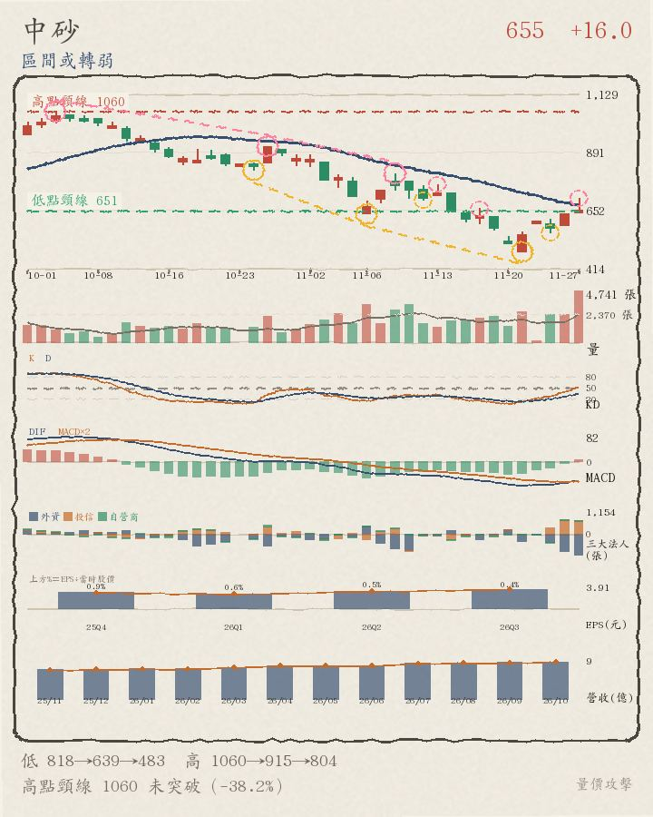
今天帶量收紅、跌破月線 675.1，離高點頸線 1060 還差 38.2%，轉折還沒走出明顯方向。
- 月線位置：收盤 655 在月線 675.1 之下；5 日線 607.2 也在月線之下（短均在下）；月線走平或向下、5 日線向上
- 量能：成交量是 20 日均量的 2.27 倍，比 20 日均量大不少；收紅又量增，量價配合
- 關鍵價位：高點頸線 1060 還沒突破，差 38.2%；最近轉折高點 804（低於 18.5%）；最近轉折低點 483（高於 35.6%）
- 轉折結構：低點 818、639、483 與高點 1060、915、804 都沒有明顯遞增，屬於區間震盪或轉弱；還沒確認的轉折低點 11-12 696、11-25 560；還沒確認的轉折高點 11-18 660、11-27 702（圖上虛線小圈）
區間或轉弱 成交金額 31.35 億・全榜第 56 名（上市第 49 名）
好條件 2/4：在月線之下、月線下彎
不好條件 1/5：外資賣超
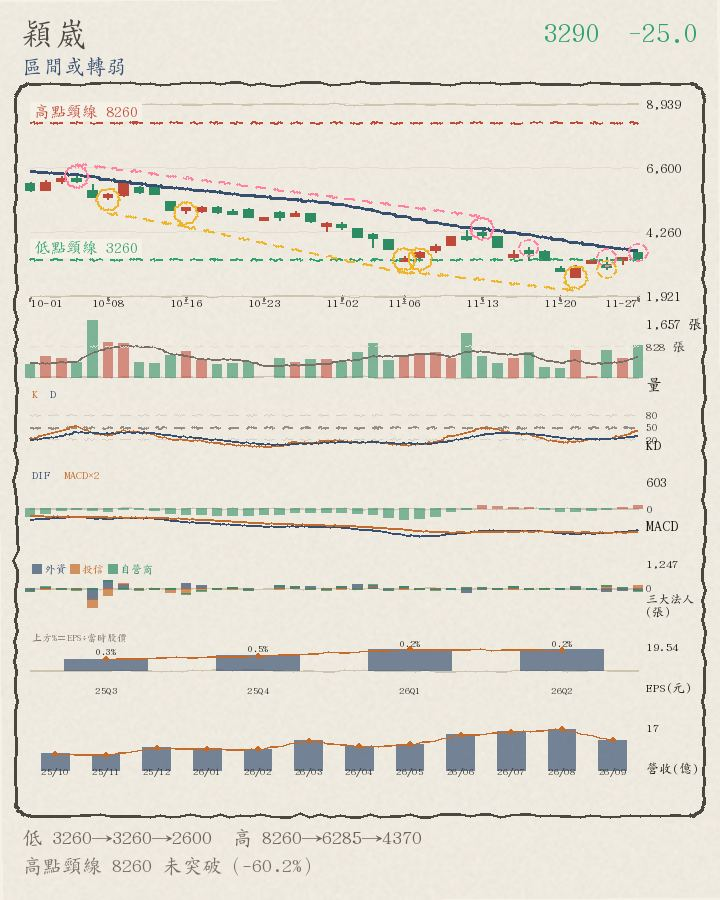
今天帶量收黑、跌破月線 3573，離高點頸線 8260 還差 60.2%，轉折還沒走出明顯方向。
- 月線位置：收盤 3290 在月線 3573 之下；5 日線 3154 也在月線之下（短均在下）；月線走平或向下、5 日線走平或向下
- 量能：成交量是 20 日均量的 1.59 倍，比 20 日均量大不少；收黑卻量增，量價背離
- 關鍵價位：高點頸線 8260 還沒突破，差 60.2%；最近轉折高點 4370（低於 24.7%）；最近轉折低點 2600（高於 26.5%）
- 轉折結構：低點 3260、3260、2600 與高點 8260、6285、4370 都沒有明顯遞增，屬於區間震盪或轉弱；還沒確認的轉折低點 11-25 2900；還沒確認的轉折高點 11-25 3315、11-27 3505（圖上虛線小圈）
區間或轉弱 成交金額 28.88 億・全榜第 58 名（上市第 50 名）
好條件 3/4：在月線之下、月線下彎、外資買超
不好條件 0/5：無
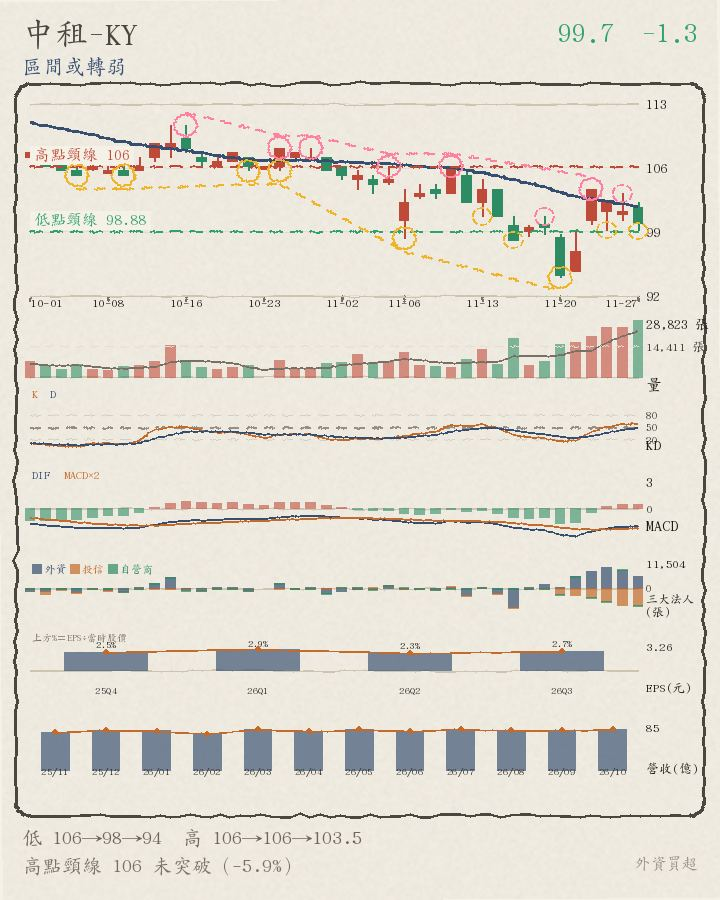
今天帶量收黑、跌破月線 101.6，離高點頸線 106 還差 5.9%，轉折還沒走出明顯方向。
- 月線位置：收盤 99.7 在月線 101.6 之下；5 日線 100.56 也在月線之下（短均在下）；月線走平或向下、5 日線向上
- 量能：成交量是 20 日均量的 2.45 倍，比 20 日均量大不少；收黑卻量增，量價背離
- 關鍵價位：高點頸線 106 還沒突破，差 5.9%；最近轉折高點 103.5（低於 3.7%）；最近轉折低點 93.8（高於 6.3%）
- 轉折結構：低點 105.5、98.1、93.8 與高點 106、106、103.5 都沒有明顯遞增，屬於區間震盪或轉弱；還沒確認的轉折低點 11-25 99、11-27 98.9；還沒確認的轉折高點 11-19 100.5、11-26 103（圖上虛線小圈）
區間或轉弱 成交金額 244.13 億・全榜第 3 名（上櫃第 1 名）
好條件 3/4：在月線之下、月線下彎、外資買超
不好條件 0/5：無

今天帶量收黑、跌破月線 471.55，離高點頸線 630 還差 29.4%，轉折還沒走出明顯方向。
- 月線位置：收盤 444.5 在月線 471.55 之下；5 日線 430.2 也在月線之下（短均在下）；月線走平或向下、5 日線走平或向下
- 量能：成交量是 20 日均量的 1.98 倍，比 20 日均量大不少；收黑卻量增，量價背離
- 關鍵價位：高點頸線 630 還沒突破，差 29.4%；最近轉折高點 573（低於 22.4%）；最近轉折低點 351（高於 26.6%）
- 轉折結構：低點 479、403.5、351 與高點 630、596、573 都沒有明顯遞增，屬於區間震盪或轉弱；還沒確認的轉折低點 11-25 404.5；還沒確認的轉折高點 11-25 465、11-27 476.5（圖上虛線小圈）
區間或轉弱 成交金額 138.03 億・全榜第 10 名（上櫃第 2 名）
好條件 2/4：在月線之下、月線下彎
不好條件 1/5：外資賣超

今天帶量收黑、跌破月線 1587.5，離高點頸線 2350 還差 32.8%，轉折還沒走出明顯方向。
- 月線位置：收盤 1580 在月線 1587.5 之下；5 日線 1548 也在月線之下（短均在下）；月線走平或向下、5 日線向上
- 量能：成交量是 20 日均量的 1.95 倍，比 20 日均量大不少；收黑卻量增，量價背離
- 關鍵價位：高點頸線 2350 還沒突破，差 32.8%；最近轉折高點 1765（低於 10.5%）；最近轉折低點 1260（高於 25.4%）
- 轉折結構：低點 1865、1405、1260 與高點 2350、2090、1765 都沒有明顯遞增，屬於區間震盪或轉弱；還沒確認的轉折低點 11-17 1430、11-25 1470；還沒確認的轉折高點 11-24 1595、11-27 1680（圖上虛線小圈）
區間或轉弱 成交金額 100.37 億・全榜第 16 名（上櫃第 3 名）
好條件 3/4：在月線之下、月線下彎、外資買超
不好條件 0/5：無

今天帶量收黑、跌破月線 887，離高點頸線 1835 還差 58.6%，轉折還沒走出明顯方向。
- 月線位置：收盤 759 在月線 887 之下；5 日線 746 也在月線之下（短均在下）；月線走平或向下、5 日線走平或向下
- 量能：成交量是 20 日均量的 1.05 倍，比 20 日均量大一些；收黑卻量增，量價背離
- 關鍵價位：高點頸線 1835 還沒突破，差 58.6%；最近轉折高點 1080（低於 29.7%）；最近轉折低點 585（高於 29.7%）
- 轉折結構：低點 1275、897、585 與高點 1835、1450、1080 都沒有明顯遞增，屬於區間震盪或轉弱；還沒確認的轉折低點 11-25 685、11-27 752；還沒確認的轉折高點 11-26 812（圖上虛線小圈）
區間或轉弱 成交金額 51.61 億・全榜第 36 名（上櫃第 4 名）
好條件 2/4：在月線之下、月線下彎
不好條件 1/5：外資賣超

今天收黑、成交量也比平均少、跌破月線 121.4，離高點頸線 150.5 還差 31.2%，轉折還沒走出明顯方向。
- 月線位置：收盤 103.5 在月線 121.4 之下；5 日線 105.5 也在月線之下（短均在下）；月線走平或向下、5 日線走平或向下
- 量能：成交量是 20 日均量的 0.48 倍，比 20 日均量少很多
- 關鍵價位：高點頸線 150.5 還沒突破，差 31.2%；最近轉折高點 150.5（低於 31.2%）；最近轉折低點 90.4（高於 14.5%）
- 轉折結構：低點 124、109.5、90.4 與高點 149、143.5、150.5 都沒有明顯遞增，屬於區間震盪或轉弱；還沒確認的轉折低點 11-25 101.5、11-27 103；還沒確認的轉折高點 11-25 115.5、11-27 111（圖上虛線小圈）
區間或轉弱 成交金額 42.66 億・全榜第 40 名（上櫃第 5 名）
好條件 3/4：在月線之下、月線下彎、外資買超
不好條件 0/5：無

今天收黑、成交量也比平均少、跌破月線 404.4，離高點頸線 530 還差 37.6%，轉折還沒走出明顯方向。
- 月線位置：收盤 330.5 在月線 404.4 之下；5 日線 343.8 也在月線之下（短均在下）；月線走平或向下、5 日線走平或向下
- 量能：成交量是 20 日均量的 0.94 倍，比 20 日均量少一些
- 關鍵價位：高點頸線 530 還沒突破，差 37.6%；最近轉折高點 519（低於 36.3%）；最近轉折低點 291.5（高於 13.4%）
- 轉折結構：低點 399、362.5、291.5 與高點 530、513、519 都沒有明顯遞增，屬於區間震盪或轉弱；還沒確認的轉折低點 11-27 321.5；還沒確認的轉折高點 11-24 373（圖上虛線小圈）
區間或轉弱 成交金額 40.05 億・全榜第 42 名（上櫃第 6 名）
好條件 2/4：在月線之下、月線下彎
不好條件 1/5：外資賣超

今天收紅、但成交量比平均少、跌破月線 11036.8，離高點頸線 18465 還差 48.0%，轉折還沒走出明顯方向。
- 月線位置：收盤 9600 在月線 11036.8 之下；5 日線 9045 也在月線之下（短均在下）；月線走平或向下、5 日線走平或向下
- 量能：成交量是 20 日均量的 0.90 倍，比 20 日均量少一些；收紅但量縮，量價背離
- 關鍵價位：高點頸線 18465 還沒突破，差 48.0%；最近轉折高點 13375（低於 28.2%）；最近轉折低點 7295（高於 31.6%）
- 轉折結構：低點 15500、10710、7295 與高點 18465、17490、13375 都沒有明顯遞增，屬於區間震盪或轉弱；還沒確認的轉折低點 11-25 8500；還沒確認的轉折高點 11-25 9590、11-27 9700（圖上虛線小圈）
區間或轉弱 成交金額 35.96 億・全榜第 48 名（上櫃第 7 名）
好條件 2/4：在月線之下、月線下彎
不好條件 1/5：外資賣超
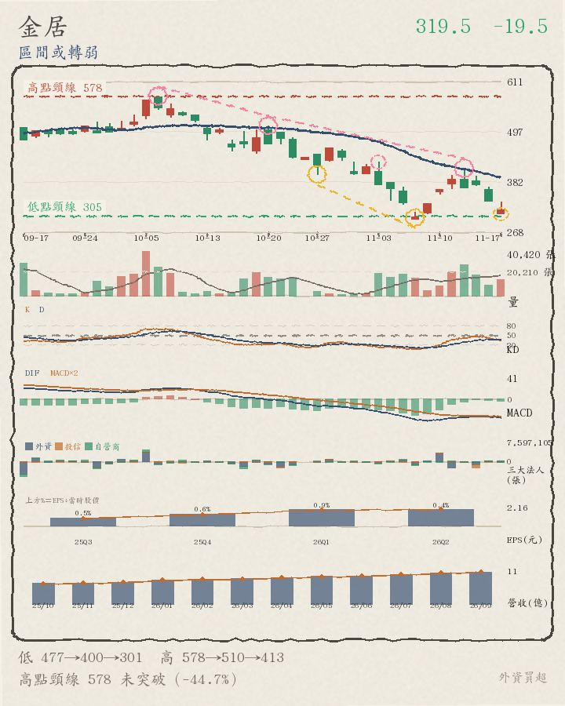
今天收黑、跌破月線 319.9，離高點頸線 578 還差 54.8%，轉折還沒走出明顯方向。
- 月線位置：收盤 261 在月線 319.9 之下；5 日線 257 也在月線之下（短均在下）；月線走平或向下、5 日線走平或向下
- 量能：成交量是 20 日均量的 1.02 倍，跟 20 日均量差不多
- 關鍵價位：高點頸線 578 還沒突破，差 54.8%；最近轉折高點 413（低於 36.8%）；最近轉折低點 222.5（高於 17.3%）
- 轉折結構：低點 399.5、301、222.5 與高點 578、510、413 都沒有明顯遞增，屬於區間震盪或轉弱；還沒確認的轉折低點 11-25 241；還沒確認的轉折高點 11-25 274.5、11-27 280（圖上虛線小圈）
區間或轉弱 成交金額 31.17 億・全榜第 57 名（上櫃第 8 名）
好條件 2/4：在月線之下、月線下彎
不好條件 1/5：外資賣超

今天收黑、成交量也比平均少、跌破月線 1046.75，離高點頸線 1515 還差 47.1%，轉折還沒走出明顯方向。
- 月線位置：收盤 801 在月線 1046.75 之下；5 日線 817.6 也在月線之下（短均在下）；月線走平或向下、5 日線走平或向下
- 量能：成交量是 20 日均量的 0.83 倍，比 20 日均量少很多
- 關鍵價位：高點頸線 1515 還沒突破，差 47.1%；最近轉折高點 1315（低於 39.1%）；最近轉折低點 715（高於 12.0%）
- 轉折結構：低點 1310、1050、715 與高點 1515、1515、1315 都沒有明顯遞增，屬於區間震盪或轉弱；還沒確認的轉折低點 11-25 769、11-27 794；還沒確認的轉折高點 11-18 1015、11-25 892（圖上虛線小圈）
區間或轉弱 成交金額 27.41 億・全榜第 59 名（上櫃第 9 名）
好條件 2/4：在月線之下、月線下彎
不好條件 1/5：外資賣超

今天收黑、成交量也比平均少、跌破月線 4087.25，離高點頸線 6160 還差 36.2%，轉折還沒走出明顯方向。
- 月線位置：收盤 3930 在月線 4087.25 之下；5 日線 3961 也在月線之下（短均在下）；月線走平或向下、5 日線走平或向下
- 量能：成交量是 20 日均量的 0.59 倍，比 20 日均量少很多
- 關鍵價位：高點頸線 6160 還沒突破，差 36.2%；最近轉折高點 5100（低於 22.9%）；最近轉折低點 3250（高於 20.9%）
- 轉折結構：低點 4995、3355、3250 與高點 6160、5150、5100 都沒有明顯遞增，屬於區間震盪或轉弱；還沒確認的轉折低點 11-18 3880、11-25 3770；還沒確認的轉折高點 11-24 4185、11-27 4230（圖上虛線小圈）
區間或轉弱 成交金額 25.76 億・全榜第 60 名（上櫃第 10 名）
好條件 3/4：在月線之下、月線下彎、外資買超
不好條件 0/5：無
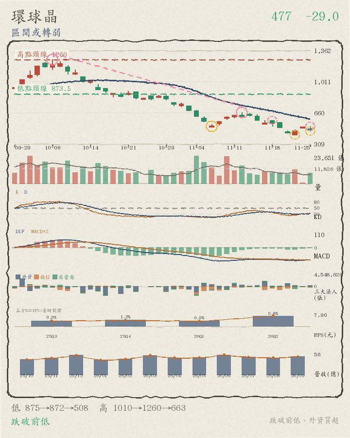
今天收黑、成交量也比平均少、跌破月線 563.65，離高點頸線 1260 還差 59.4%，轉折還沒走出明顯方向。
- 月線位置：收盤 511 在月線 563.65 之下；5 日線 494.5 也在月線之下（短均在下）；月線走平或向下、5 日線走平或向下
- 量能：成交量是 20 日均量的 0.47 倍，比 20 日均量少很多
- 關鍵價位：高點頸線 1260 還沒突破，差 59.4%；最近轉折高點 663（低於 22.9%）；最近轉折低點 410.5（高於 24.5%）
- 轉折結構：低點 872、508、410.5 與高點 1010、1260、663 都沒有明顯遞增，屬於區間震盪或轉弱；還沒確認的轉折低點 11-25 455.5；還沒確認的轉折高點 11-18 577、11-27 526（圖上虛線小圈）
區間或轉弱 成交金額 18.62 億・全榜第 61 名（上櫃第 11 名）
好條件 3/4：在月線之下、月線下彎、外資買超
不好條件 0/5：無

今天帶量收黑、跌破月線 864.2，離高點頸線 1680 還差 58.8%，轉折還沒走出明顯方向。
- 月線位置：收盤 693 在月線 864.2 之下；5 日線 701.4 也在月線之下（短均在下）；月線走平或向下、5 日線走平或向下
- 量能：成交量是 20 日均量的 1.18 倍，比 20 日均量大不少；收黑卻量增，量價背離
- 關鍵價位：高點頸線 1680 還沒突破，差 58.8%；最近轉折高點 1060（低於 34.6%）；最近轉折低點 576（高於 20.3%）
- 轉折結構：低點 1180、864、576 與高點 1680、1360、1060 都沒有明顯遞增，屬於區間震盪或轉弱；還沒確認的轉折低點 11-25 666、11-27 682；還沒確認的轉折高點 11-25 775（圖上虛線小圈）
上升趨勢（底底高＋頭頭高） 成交金額 17.19 億・全榜第 62 名（上櫃第 12 名）
好條件 0/4：無
不好條件 3/5：站上月線、月線向上、外資賣超
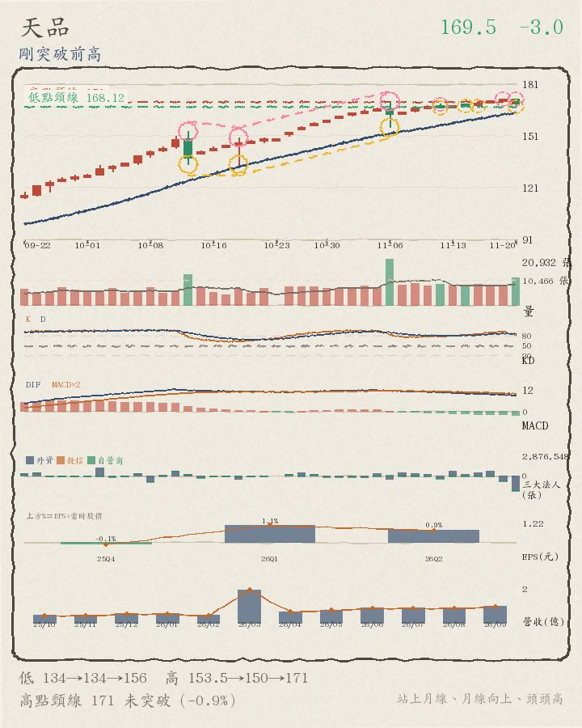
今天收黑、站上月線 168.875，離高點頸線 174 還差 0.6%，轉折結構仍是底底高＋頭頭高。
- 月線位置：收盤 173 在月線 168.875 之上；5 日線 172.8 也在月線之上（短均在上）；月線向上、5 日線向上
- 量能：成交量是 20 日均量的 1.00 倍，跟 20 日均量差不多
- 關鍵價位：高點頸線 174 還沒突破，差 0.6%；最近轉折高點 174（低於 0.6%）；最近轉折低點 168（高於 3.0%）
- 轉折結構：低點 134.5、156、168 一路墊高 24.9%、高點 150、171、174 也一路墊高 16.0%，是底底高＋頭頭高；還沒確認的轉折低點 11-25 171、11-27 172.5；還沒確認的轉折高點 11-19 172.5、11-26 173.5（圖上虛線小圈）
高點墊高、底部不穩 成交金額 16.5 億・全榜第 63 名（上櫃第 13 名）
好條件 1/4：外資買超
不好條件 2/5：站上月線、月線向上

今天收紅、但成交量比平均少、站上月線 1328.5，離高點頸線 1585 還差 6.6%，高點還在墊高（但底部沒同步墊高）。
- 月線位置：收盤 1480 在月線 1328.5 之上；5 日線 1352 也在月線之上（短均在上）；月線向上、5 日線走平或向下
- 量能：成交量是 20 日均量的 0.65 倍，比 20 日均量少很多；收紅但量縮，量價背離
- 關鍵價位：高點頸線 1585 還沒突破，差 6.6%；最近轉折高點 1585（低於 6.6%）；最近轉折低點 1105（高於 33.9%）
- 轉折結構：高點 1470、1575、1585 墊高 7.8%（頭頭高），但低點 1315、1065、1105 沒有同步墊高；還沒確認的轉折低點 11-17 1315、11-25 1250；還沒確認的轉折高點 11-24 1385、11-27 1515（圖上虛線小圈）
區間或轉弱 成交金額 15.59 億・全榜第 64 名（上櫃第 14 名）
好條件 1/4：月線下彎
不好條件 2/5：站上月線、外資賣超
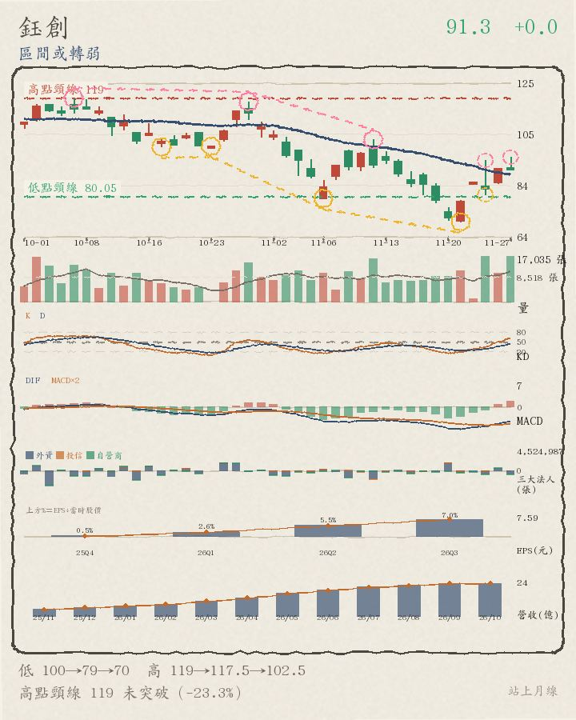
今天帶量收黑、站上月線 88.71，離高點頸線 119 還差 23.3%，轉折還沒走出明顯方向。
- 月線位置：收盤 91.3 在月線 88.71 之上；5 日線 85.92 也在月線之下（短均在下）；月線走平或向下、5 日線向上
- 量能：成交量是 20 日均量的 1.80 倍，比 20 日均量大不少；收黑卻量增，量價背離
- 關鍵價位：高點頸線 119 還沒突破，差 23.3%；最近轉折高點 102.5（低於 10.9%）；最近轉折低點 70（高於 30.4%）
- 轉折結構：低點 100、79.3、70 與高點 119、117.5、102.5 都沒有明顯遞增，屬於區間震盪或轉弱；還沒確認的轉折低點 11-25 80.8；還沒確認的轉折高點 11-25 94.3、11-27 95.6（圖上虛線小圈）
區間或轉弱 成交金額 15.46 億・全榜第 65 名（上櫃第 15 名）
好條件 3/4：在月線之下、月線下彎、外資買超
不好條件 0/5：無

今天收紅、但成交量比平均少、跌破月線 125.9，離高點頸線 170 還差 28.5%，轉折還沒走出明顯方向。
- 月線位置：收盤 121.5 在月線 125.9 之下；5 日線 117.7 也在月線之下（短均在下）；月線走平或向下、5 日線走平或向下
- 量能：成交量是 20 日均量的 0.84 倍，比 20 日均量少很多；收紅但量縮，量價背離
- 關鍵價位：高點頸線 170 還沒突破，差 28.5%；最近轉折高點 142（低於 14.4%）；最近轉折低點 102.5（高於 18.5%）
- 轉折結構：低點 159、113.5、102.5 與高點 170、170、142 都沒有明顯遞增，屬於區間震盪或轉弱；還沒確認的轉折低點 11-17 117、11-25 109；還沒確認的轉折高點 11-24 121、11-27 122（圖上虛線小圈）
區間或轉弱 成交金額 15.36 億・全榜第 66 名（上櫃第 16 名）
好條件 2/4：在月線之下、月線下彎
不好條件 1/5：外資賣超

今天收紅、但成交量比平均少、跌破月線 285.25，離高點頸線 385.5 還差 28.5%，轉折還沒走出明顯方向。
- 月線位置：收盤 275.5 在月線 285.25 之下；5 日線 260.6 也在月線之下（短均在下）；月線走平或向下、5 日線走平或向下
- 量能：成交量是 20 日均量的 0.77 倍，比 20 日均量少很多；收紅但量縮，量價背離
- 關鍵價位：高點頸線 385.5 還沒突破，差 28.5%；最近轉折高點 323（低於 14.7%）；最近轉折低點 230.5（高於 19.5%）
- 轉折結構：低點 328、270、230.5 與高點 385.5、378.5、323 都沒有明顯遞增，屬於區間震盪或轉弱；還沒確認的轉折低點 11-17 263、11-25 244；還沒確認的轉折高點 11-24 274、11-27 275.5（圖上虛線小圈）
區間或轉弱 成交金額 12.68 億・全榜第 67 名（上櫃第 17 名）
好條件 3/4：在月線之下、月線下彎、外資買超
不好條件 0/5：無
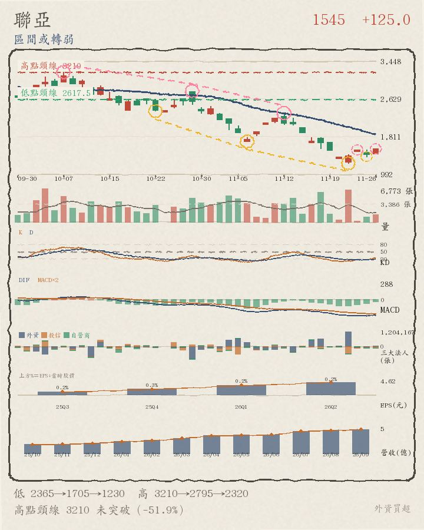
今天收黑、成交量也比平均少、跌破月線 1812，離高點頸線 3210 還差 56.5%，轉折還沒走出明顯方向。
- 月線位置：收盤 1395 在月線 1812 之下；5 日線 1455 也在月線之下（短均在下）；月線走平或向下、5 日線走平或向下
- 量能：成交量是 20 日均量的 0.32 倍，比 20 日均量少很多
- 關鍵價位：高點頸線 3210 還沒突破，差 56.5%；最近轉折高點 2320（低於 39.9%）；最近轉折低點 1230（高於 13.4%）
- 轉折結構：低點 2365、1705、1230 與高點 3210、2795、2320 都沒有明顯遞增，屬於區間震盪或轉弱；還沒確認的轉折低點 11-25 1375、11-27 1395；還沒確認的轉折高點 11-24 1525、11-26 1545（圖上虛線小圈）
區間或轉弱 成交金額 12.4 億・全榜第 68 名（上櫃第 18 名）
好條件 2/4：在月線之下、月線下彎
不好條件 1/5：外資賣超

今天收黑、成交量也比平均少、跌破月線 331.375，離高點頸線 588 還差 54.2%，轉折還沒走出明顯方向。
- 月線位置：收盤 269.5 在月線 331.375 之下；5 日線 269.5 也在月線之下（短均在下）；月線走平或向下、5 日線走平或向下
- 量能：成交量是 20 日均量的 0.78 倍，比 20 日均量少很多
- 關鍵價位：高點頸線 588 還沒突破，差 54.2%；最近轉折高點 410.5（低於 34.3%）；最近轉折低點 239.5（高於 12.5%）
- 轉折結構：低點 445、312、239.5 與高點 588、531、410.5 都沒有明顯遞增，屬於區間震盪或轉弱；還沒確認的轉折低點 11-25 253、11-27 265；還沒確認的轉折高點 11-18 340.5、11-25 299（圖上虛線小圈）
區間或轉弱 成交金額 12.03 億・全榜第 69 名（上櫃第 19 名）
好條件 2/4：在月線之下、月線下彎
不好條件 1/5：外資賣超

今天收黑、成交量也比平均少、跌破月線 150.1，離高點頸線 223 還差 41.9%，轉折還沒走出明顯方向。
- 月線位置：收盤 129.5 在月線 150.1 之下；5 日線 128.7 也在月線之下（短均在下）；月線走平或向下、5 日線走平或向下
- 量能：成交量是 20 日均量的 0.49 倍，比 20 日均量少很多
- 關鍵價位：高點頸線 223 還沒突破，差 41.9%；最近轉折高點 180（低於 28.1%）；最近轉折低點 108.5（高於 19.4%）
- 轉折結構：低點 194.5、142、108.5 與高點 217、223、180 都沒有明顯遞增，屬於區間震盪或轉弱；還沒確認的轉折低點 11-25 121.5；還沒確認的轉折高點 11-25 136.5、11-27 135.5（圖上虛線小圈）
區間或轉弱 成交金額 11.52 億・全榜第 70 名（上櫃第 20 名）
好條件 2/4：月線下彎、外資買超
不好條件 1/5：站上月線
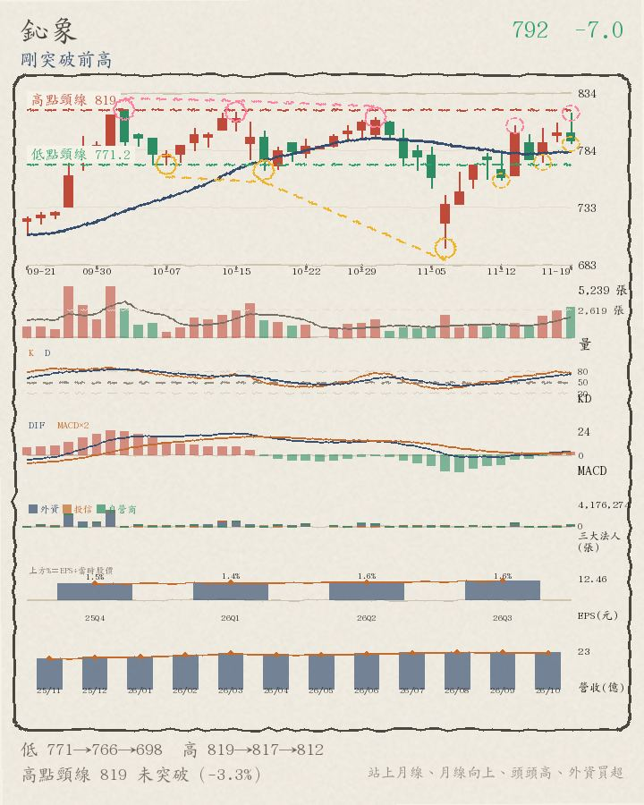
今天收黑、站上月線 774.55，離高點頸線 817 還差 4.4%，轉折還沒走出明顯方向。
- 月線位置：收盤 781 在月線 774.55 之上；5 日線 776.2 也在月線之上（短均在上）；月線走平或向下、5 日線走平或向下
- 量能：成交量是 20 日均量的 0.98 倍，跟 20 日均量差不多
- 關鍵價位：高點頸線 817 還沒突破，差 4.4%；最近轉折高點 816（低於 4.3%）；最近轉折低點 740（高於 5.5%）
- 轉折結構：低點 766、698、740 與高點 817、812、816 都沒有明顯遞增，屬於區間震盪或轉弱；還沒確認的轉折低點 11-25 761、11-27 767；還沒確認的轉折高點 11-24 810、11-26 798（圖上虛線小圈）